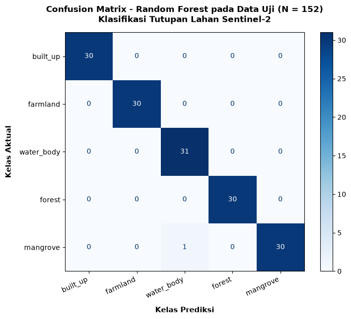

Klasifikasi Tutupan Lahan Menggunakan Citra Sentinel-2 di Banyuwangi#
1. Business Understanding#
1.1 Latar Belakang#
Informasi mengenai tutupan lahan memiliki peran penting dalam pemantauan kondisi lingkungan, pengelolaan sumber daya alam, dan perencanaan wilayah. Perbedaan karakteristik tutupan lahan, seperti kawasan terbangun, lahan pertanian, badan air, hutan non-mangrove, dan mangrove, memerlukan pendekatan klasifikasi yang mampu mengenali karakteristik masing-masing kelas.
Citra satelit Sentinel-2 menyediakan informasi spektral yang dapat dimanfaatkan untuk membedakan tutupan lahan berdasarkan karakteristik reflektansi permukaan. Kombinasi kanal spektral yang sesuai dapat digunakan untuk mengidentifikasi perbedaan antara vegetasi, kawasan terbangun, dan badan air, termasuk mendukung pembedaan mangrove dengan hutan non-mangrove.
Penelitian ini memanfaatkan citra Sentinel-2 Level-2A dari Copernicus Data Space Ecosystem sebagai sumber data utama. Data referensi tutupan lahan diperoleh melalui digitasi poligon secara manual pada wilayah Muncar, Teluk Pangpang, Tegaldlimo, dan sekitarnya di Kabupaten Banyuwangi, Jawa Timur. Poligon tersebut digunakan sebagai data referensi untuk membangun dan mengevaluasi model klasifikasi tutupan lahan.
Penelitian difokuskan pada lima kelas tutupan lahan, yaitu kawasan terbangun (built-up), lahan pertanian (farmland), badan air (water body), hutan non-mangrove (forest), dan mangrove. Model yang dikembangkan selanjutnya direncanakan untuk diterapkan pada wilayah Provinsi Jawa Timur dan hasilnya disajikan melalui aplikasi berbasis web menggunakan Streamlit.
1.2 Identifikasi Masalah#
Permasalahan yang menjadi dasar penelitian ini adalah sebagai berikut.
Karakteristik spektral antarjenis tutupan lahan dapat memiliki kemiripan sehingga diperlukan kombinasi fitur yang sesuai untuk mendukung proses klasifikasi.
Pembedaan antara mangrove dan hutan non-mangrove memerlukan data referensi yang tepat serta evaluasi hasil klasifikasi yang memadai.
Data referensi hasil digitasi perlu diolah menjadi dataset yang sesuai untuk pelatihan dan pengujian model klasifikasi.
Hasil klasifikasi perlu disajikan dalam bentuk peta interaktif agar distribusi spasial setiap kelas tutupan lahan dapat diamati dengan lebih mudah.
Penerapan model dari wilayah sampel di Kabupaten Banyuwangi ke wilayah Provinsi Jawa Timur perlu memperhatikan keterbatasan keterwakilan sampel dan kemampuan generalisasi model.
1.3 Tujuan Penelitian#
Penelitian ini bertujuan untuk:
Memanfaatkan citra Sentinel-2 Level-2A untuk memperoleh informasi spektral yang mendukung klasifikasi tutupan lahan.
Membangun model klasifikasi untuk membedakan lima kelas tutupan lahan, yaitu kawasan terbangun, lahan pertanian, badan air, hutan non-mangrove, dan mangrove.
Mengevaluasi kinerja model menggunakan metrik evaluasi klasifikasi yang sesuai, meliputi confusion matrix, akurasi, dan Cohen’s Kappa, serta metrik per kelas.
Menghasilkan peta klasifikasi tutupan lahan yang dapat divisualisasikan secara interaktif melalui aplikasi Streamlit.
Mengembangkan implementasi awal klasifikasi tutupan lahan untuk wilayah Provinsi Jawa Timur dengan memperhatikan keterbatasan data referensi dan validasi spasial.
1.4 Business Objective#
Tujuan implementasi dari penelitian ini adalah menyediakan prototipe aplikasi pemetaan tutupan lahan yang mampu menampilkan hasil klasifikasi secara interaktif. Aplikasi dirancang untuk menampilkan peta dasar, lapisan hasil klasifikasi, pilihan kelas yang ingin ditampilkan, serta ringkasan luas dan persentase setiap kelas.
Aplikasi juga direncanakan menampilkan informasi evaluasi model agar pengguna dapat memahami kinerja klasifikasi yang digunakan. Estimasi luas tutupan lahan akan dihitung berdasarkan hasil klasifikasi raster dan resolusi spasial yang digunakan.
1.5 Manfaat Penelitian#
Penelitian ini diharapkan memberikan manfaat sebagai berikut.
Manfaat akademis: menjadi contoh penerapan penginderaan jauh dan klasifikasi berbasis data spektral Sentinel-2 untuk pemetaan tutupan lahan.
Manfaat teknis: menghasilkan alur pengolahan data yang mencakup persiapan data referensi, ekstraksi fitur, pelatihan model, evaluasi, dan visualisasi hasil.
Manfaat praktis: menyediakan prototipe peta interaktif yang memudahkan pengamatan distribusi lima kelas tutupan lahan.
Manfaat pengembangan: menjadi dasar untuk penelitian lanjutan dengan cakupan sampel yang lebih luas dan validasi tambahan pada wilayah di luar lokasi pengembangan model.
1.6 Ruang Lingkup dan Batasan Penelitian#
Ruang Lingkup Wilayah Penelitian
Penelitian ini berfokus pada klasifikasi tutupan lahan dengan target penerapan pada wilayah Provinsi Jawa Timur. Namun, pengambilan sampel berlabel dan analisis raster pada penelitian ini difokuskan pada wilayah Muncar, Teluk Pangpang, Tegaldlimo, dan sekitarnya di Kabupaten Banyuwangi. Oleh karena itu, hasil evaluasi model merepresentasikan kinerja pada sampel yang digunakan di wilayah studi tersebut dan belum dapat dianggap mewakili seluruh wilayah Provinsi Jawa Timur.
2. Data Understanding#
Tahap Data Understanding bertujuan memahami karakteristik data yang digunakan dalam klasifikasi tutupan lahan. Data terdiri atas dua komponen utama: poligon sampel tutupan lahan hasil digitasi manual dan citra satelit Sentinel-2 Level-2A dari Copernicus Data Space Ecosystem.
Poligon sampel mencakup lima kelas tutupan lahan, yaitu kawasan terbangun (built-up), lahan pertanian (farmland), badan air (water body), hutan non-mangrove (forest), dan hutan mangrove (mangrove). Digitasi dilakukan pada wilayah Muncar, Teluk Pangpang, Tegaldlimo, dan sekitarnya di Kabupaten Banyuwangi, Jawa Timur. Citra Sentinel-2 digunakan untuk memperoleh informasi spektral yang menghubungkan setiap poligon sampel dengan nilai reflektansi permukaan bumi.
2.1 Pengumpulan dan Pemahaman Data#
Data referensi tutupan lahan diperoleh melalui digitasi poligon secara manual menggunakan citra acuan. Setiap poligon diberi label identitas yang menunjukkan kelasnya, seperti build1, farm1, water1, forest1, dan mang1. Data ini disimpan dalam format GeoJSON dan menjadi satu-satunya sumber ground truth yang digunakan dalam penelitian.
Data citra menggunakan Sentinel-2 Level-2A dari Copernicus Data Space Ecosystem melalui antarmuka openEO. Koleksi yang digunakan adalah SENTINEL2_L2A. Band yang diprioritaskan adalah B03 (Green), B04 (Red), B08 (Near Infrared), dan B11 (Shortwave Infrared). Resolusi kerja yang direncanakan adalah 20 meter karena band B11 memiliki resolusi asli 20 meter.
Sel berikut memeriksa keberadaan file GeoJSON sebelum data dibaca.
from pathlib import Path
file_geojson = Path(
r"C:\Users\Alif\PSD\build,farm,water,forest,mangrove.geojson"
)
print("File ditemukan:", file_geojson.exists())
print("Path:", file_geojson)
if file_geojson.exists():
print("Ukuran file:", f"{file_geojson.stat().st_size:,} bytes")
else:
print("File tidak ditemukan. Periksa kembali lokasi file.")
File ditemukan: True
Path: C:\Users\Alif\PSD\build,farm,water,forest,mangrove.geojson
Ukuran file: 114,806 bytes
2.2 Pemeriksaan dan Kualitas Data Sampel#
Pemeriksaan data sampel dilakukan untuk mengetahui jumlah fitur, struktur atribut, distribusi label per kelas, kualitas geometri, dan sistem koordinat. Tahap ini penting untuk memastikan data referensi siap digunakan sebelum memasuki tahap Data Preparation.
Langkah pemeriksaan:
Pembacaan data GeoJSON dan identifikasi jumlah fitur serta jenis geometri
Penyeragaman label ke lima kelas dan deteksi fitur tanpa label
Pemeriksaan kualitas geometri: keberadaan, validitas, dan luas
Identifikasi fitur bermasalah dan penanganannya
Penetapan dan verifikasi sistem koordinat (CRS)
import json
import re
from collections import Counter
from pathlib import Path
# Baca data GeoJSON (data asli tidak diubah)
file_geojson = Path(
r"C:\Users\Alif\PSD\build,farm,water,forest,mangrove.geojson"
)
with file_geojson.open("r", encoding="utf-8") as file:
data_geojson = json.load(file)
features = data_geojson.get("features", [])
print("Jumlah fitur:", len(features))
# Distribusi label mentah
print("\nDistribusi label:")
label_counts = Counter(
str(feature.get("properties", {}).get("class", "")).strip()
for feature in features
)
for label, jumlah in sorted(label_counts.items()):
print(f"{label or '[tanpa label]'}: {jumlah}")
# Jenis geometri
print("\nJenis geometri:")
geometry_counts = Counter(
(feature.get("geometry") or {}).get("type", "Tidak tersedia")
for feature in features
)
for jenis, jumlah in sorted(geometry_counts.items()):
print(f"{jenis}: {jumlah}")
# Contoh atribut
print("\nContoh atribut:")
for feature in features[:3]:
print(feature.get("properties", {}))
Jumlah fitur: 508
Distribusi label:
[tanpa label]: 1
build 5: 1
build1: 1
build10: 1
build100: 1
build11: 1
build12: 1
build13: 1
build14: 1
build15: 1
build16: 1
build17: 1
build18: 1
build19: 1
build2: 1
build20: 1
build21: 1
build22: 1
build23: 1
build24: 1
build25: 1
build26: 1
build27: 1
build28: 1
build29: 1
build3: 1
build30: 1
build31: 1
build32: 1
build33: 1
build34: 1
build35: 1
build36: 1
build37: 1
build38: 1
build39: 1
build4: 1
build40: 1
build41: 1
build42: 1
build43: 1
build44: 1
build45: 2
build46: 1
build47: 1
build48: 1
build49: 1
build50: 1
build51: 1
build52: 1
build53: 1
build54: 1
build55: 1
build56: 1
build57: 1
build58: 1
build59: 1
build6: 1
build60: 1
build61: 1
build62: 1
build63: 1
build64: 1
build65: 1
build66: 1
build67: 1
build68: 1
build69: 1
build7: 1
build70: 1
build71: 1
build72: 1
build73: 1
build74: 1
build75: 1
build76: 1
build77: 1
build78: 1
build79: 1
build8: 1
build80: 1
build81: 1
build82: 1
build83: 1
build84: 1
build85: 1
build86: 1
build87: 1
build88: 1
build89: 1
build9: 1
build90: 1
build91: 1
build92: 1
build93: 1
build94: 1
build95: 1
build96: 1
build97: 1
build98: 1
build99: 1
farm1: 1
farm10: 1
farm100: 1
farm11: 1
farm12: 1
farm13: 1
farm14: 1
farm15: 1
farm16: 1
farm17: 1
farm18: 1
farm19: 1
farm2: 1
farm20: 1
farm21: 1
farm22: 1
farm23: 1
farm24: 1
farm25: 1
farm26: 1
farm27: 1
farm28: 1
farm29: 1
farm3: 1
farm30: 1
farm31: 1
farm32: 1
farm33: 1
farm34: 1
farm35: 1
farm36: 1
farm37: 1
farm38: 1
farm39: 1
farm4: 1
farm40: 1
farm41: 1
farm42: 1
farm43: 1
farm44: 1
farm45: 1
farm46: 1
farm47: 1
farm48: 1
farm49: 1
farm5: 1
farm50: 1
farm51: 1
farm52: 1
farm53: 1
farm54: 1
farm55: 1
farm56: 1
farm57: 1
farm58: 1
farm59: 1
farm6: 1
farm60: 1
farm61: 1
farm62: 1
farm63: 1
farm64: 1
farm65: 1
farm66: 1
farm67: 1
farm68: 1
farm69: 1
farm7: 1
farm70: 1
farm71: 1
farm72: 1
farm73: 1
farm74: 1
farm75: 1
farm76: 1
farm77: 1
farm78: 1
farm79: 1
farm8: 1
farm80: 1
farm81: 1
farm82: 1
farm83: 1
farm84: 1
farm85: 1
farm86: 1
farm87: 1
farm88: 1
farm89: 1
farm9: 1
farm90: 1
farm91: 1
farm92: 1
farm93: 1
farm94: 1
farm95: 1
farm96: 1
farm97: 1
farm98: 1
farm99: 1
forest1: 1
forest10: 1
forest100: 1
forest11: 1
forest12: 1
forest13: 1
forest14: 1
forest15: 1
forest16: 1
forest17: 1
forest18: 1
forest19: 1
forest2: 1
forest20: 1
forest21: 1
forest22: 1
forest23: 1
forest24: 1
forest25: 1
forest26: 1
forest27: 1
forest28: 1
forest29: 1
forest3: 1
forest30: 1
forest31: 1
forest32: 1
forest33: 1
forest34: 1
forest35: 1
forest36: 1
forest37: 1
forest38: 1
forest39: 1
forest4: 1
forest40: 1
forest41: 1
forest42: 1
forest43: 1
forest44: 1
forest45: 1
forest46: 1
forest47: 1
forest48: 1
forest49: 1
forest5: 1
forest50: 1
forest51: 1
forest52: 1
forest53: 1
forest54: 1
forest55: 1
forest56: 1
forest57: 1
forest58: 1
forest59: 1
forest6: 1
forest60: 1
forest61: 1
forest62: 1
forest63: 1
forest64: 1
forest65: 1
forest66: 1
forest67: 1
forest68: 1
forest69: 1
forest7: 1
forest70: 1
forest71: 1
forest72: 1
forest73: 1
forest74: 1
forest75: 1
forest76: 1
forest77: 1
forest78: 1
forest79: 1
forest8: 1
forest80: 1
forest81: 1
forest82: 1
forest83: 1
forest84: 1
forest85: 1
forest86: 1
forest87: 1
forest88: 1
forest89: 1
forest9: 1
forest90: 1
forest91: 1
forest92: 1
forest93: 1
forest94: 1
forest95: 1
forest96: 1
forest97: 1
forest98: 1
forest99: 1
mang1: 1
mang10: 1
mang100: 1
mang11: 1
mang12: 1
mang13: 1
mang14: 1
mang15: 1
mang16: 1
mang17: 1
mang18: 1
mang19: 1
mang2: 1
mang20: 1
mang21: 1
mang22: 1
mang23: 1
mang24: 1
mang25: 1
mang26: 1
mang27: 1
mang28: 1
mang29: 1
mang3: 1
mang30: 1
mang31: 1
mang32: 1
mang33: 1
mang34: 1
mang35: 1
mang36: 1
mang37: 1
mang38: 1
mang39: 1
mang4: 1
mang40: 1
mang41: 1
mang42: 1
mang43: 1
mang44: 1
mang45: 1
mang46: 1
mang47: 1
mang48: 1
mang49: 1
mang5: 1
mang50: 1
mang51: 1
mang52: 1
mang53: 1
mang54: 3
mang55: 1
mang56: 1
mang57: 1
mang58: 1
mang59: 1
mang6: 1
mang60: 1
mang61: 1
mang62: 1
mang63: 1
mang64: 2
mang65: 1
mang66: 1
mang67: 1
mang68: 1
mang69: 1
mang7: 1
mang70: 1
mang71: 1
mang72: 1
mang73: 1
mang74: 2
mang75: 1
mang76: 1
mang77: 1
mang78: 1
mang79: 1
mang8: 1
mang80: 1
mang81: 1
mang82: 1
mang83: 1
mang84: 1
mang85: 1
mang86: 1
mang87: 1
mang88: 1
mang89: 1
mang9: 1
mang90: 1
mang91: 1
mang92: 1
mang93: 1
mang94: 1
mang95: 1
mang96: 1
mang97: 1
mang98: 1
mang99: 1
water1: 1
water10: 1
water100: 1
water11: 1
water12: 1
water13: 1
water14: 1
water15: 1
water16: 1
water17: 1
water18: 1
water19: 1
water2: 1
water20: 1
water21: 1
water22: 2
water23: 1
water24: 1
water25: 1
water26: 1
water27: 1
water28: 2
water29: 1
water3: 1
water30: 1
water31: 1
water32: 1
water33: 1
water34: 1
water35: 1
water36: 1
water37: 1
water38: 1
water39: 1
water4: 1
water40: 1
water41: 1
water42: 1
water43: 1
water44: 1
water45: 1
water46: 1
water47: 1
water48: 1
water49: 1
water5: 1
water50: 1
water51: 1
water52: 1
water53: 1
water54: 1
water55: 1
water56: 1
water57: 1
water58: 1
water59: 1
water6: 1
water60: 1
water61: 1
water62: 1
water63: 1
water64: 1
water65: 1
water66: 1
water67: 1
water68: 1
water69: 1
water7: 1
water70: 1
water71: 1
water72: 1
water73: 1
water74: 1
water75: 1
water76: 1
water77: 1
water78: 1
water79: 1
water8: 1
water80: 1
water81: 1
water82: 1
water83: 1
water84: 1
water85: 1
water86: 1
water87: 1
water88: 1
water89: 1
water9: 1
water90: 1
water91: 1
water92: 1
water93: 1
water94: 1
water95: 1
water96: 1
water97: 1
water98: 1
water99: 1
Jenis geometri:
Polygon: 508
Contoh atribut:
{'class': 'build1'}
{'class': 'build2'}
{'class': 'build3'}
Penyeragaman Label ke Lima Kelas#
Atribut class berisi identitas unik per poligon (misalnya build1, mang40). Label tersebut dipetakan ke lima kelas tutupan lahan berdasarkan awalan:
Awalan label |
Kelas tutupan lahan |
|---|---|
|
|
|
|
|
|
|
|
|
|
Fitur tanpa label atau label tidak dikenali dicatat terpisah.
def tentukan_kelas(label):
"""Petakan label identitas poligon ke nama kelas tutupan lahan."""
label = str(label).strip().lower()
if re.fullmatch(r"build\s*\d*", label):
return "built_up"
elif re.fullmatch(r"farm\s*\d*", label):
return "farmland"
elif re.fullmatch(r"water\s*\d*", label):
return "water_body"
elif re.fullmatch(r"forest\s*\d*", label):
return "forest"
elif re.fullmatch(r"mang\s*\d*", label):
return "mangrove"
else:
return None
ringkasan_kelas = Counter()
tanpa_label = 0
label_tidak_dikenali = []
for feature in features:
label_asli = feature.get("properties", {}).get("class")
kelas = tentukan_kelas(label_asli or "")
if kelas is None:
if not str(label_asli or "").strip():
tanpa_label += 1
else:
label_tidak_dikenali.append(label_asli)
else:
ringkasan_kelas[kelas] += 1
print("Distribusi lima kelas (sebelum pembersihan geometri):")
for kelas in ["built_up", "farmland", "water_body", "forest", "mangrove"]:
print(f"{kelas}: {ringkasan_kelas[kelas]}")
print("\nFitur tanpa label:", tanpa_label)
print("Label tidak dikenali:", label_tidak_dikenali)
Distribusi lima kelas (sebelum pembersihan geometri):
built_up: 101
farmland: 100
water_body: 102
forest: 100
mangrove: 104
Fitur tanpa label: 1
Label tidak dikenali: []
Pemeriksaan Kualitas Geometri#
Pemeriksaan geometri menggunakan Shapely untuk mengidentifikasi: geometri kosong, geometri tidak valid (self-intersection), geometri berluas nol, dan fitur yang gagal diparse. Data asli GeoJSON tidak diubah pada tahap ini.
from shapely.geometry import shape
jumlah_geometri_kosong = 0
jumlah_geometri_tidak_valid = 0
jumlah_luas_nol = 0
jenis_geometri = Counter()
masalah_geometri = []
for i, feature in enumerate(features):
geom_json = feature.get("geometry")
if not geom_json:
jumlah_geometri_kosong += 1
masalah_geometri.append((i, "Geometri kosong"))
continue
try:
geom = shape(geom_json)
jenis_geometri[geom.geom_type] += 1
if not geom.is_valid:
jumlah_geometri_tidak_valid += 1
masalah_geometri.append((i, "Geometri tidak valid"))
if geom.is_empty:
jumlah_geometri_kosong += 1
masalah_geometri.append((i, "Geometri kosong"))
elif geom.area == 0:
jumlah_luas_nol += 1
masalah_geometri.append((i, "Luas geometri nol"))
except Exception as error:
masalah_geometri.append((i, f"Gagal dibaca: {error}"))
print("Jumlah fitur:", len(features))
print("Jenis geometri:", dict(jenis_geometri))
print("Geometri kosong:", jumlah_geometri_kosong)
print("Geometri tidak valid:", jumlah_geometri_tidak_valid)
print("Luas geometri nol:", jumlah_luas_nol)
print("Jumlah fitur bermasalah:", len(masalah_geometri))
if masalah_geometri:
print("\nContoh fitur bermasalah:")
for masalah in masalah_geometri[:10]:
print(masalah)
Jumlah fitur: 508
Jenis geometri: {'Polygon': 507}
Geometri kosong: 0
Geometri tidak valid: 1
Luas geometri nol: 0
Jumlah fitur bermasalah: 2
Contoh fitur bermasalah:
(442, 'Geometri tidak valid')
(448, 'Gagal dibaca: A linearring requires at least 4 coordinates.')
# Tampilkan detail setiap fitur bermasalah untuk pemeriksaan manual
for indeks, keterangan in masalah_geometri:
feature = features[indeks]
print(f"\nIndeks fitur: {indeks}")
print("Masalah:", keterangan)
print("Atribut:", feature.get("properties", {}))
print("Geometri:", feature.get("geometry"))
Indeks fitur: 442
Masalah: Geometri tidak valid
Atribut: {'class': 'mang40'}
Geometri: {'type': 'Polygon', 'coordinates': [[[114.36704, -8.475842], [114.366909, -8.475674], [114.366913, -8.475677], [114.366909, -8.475674], [114.366909, -8.47567], [114.367214, -8.476043], [114.367497, -8.476187], [114.367824, -8.476051], [114.367305, -8.475512], [114.366909, -8.47567], [114.36704, -8.475842]]]}
Indeks fitur: 448
Masalah: Gagal dibaca: A linearring requires at least 4 coordinates.
Atribut: {}
Geometri: {'type': 'Polygon', 'coordinates': [[[114.363712, -8.476711], [114.363712, -8.476711]]]}
Hasil Pemeriksaan Fitur Bermasalah#
Fitur indeks 442 — mang40: Geometri tidak valid karena self-intersection (titik berulang yang membentuk simpul). Percobaan perbaikan dengan shapely.make_valid() menghasilkan GeometryCollection, bukan Polygon/MultiPolygon. Karena hasil perbaikan tidak menghasilkan geometri poligon yang dapat digunakan untuk rasterisasi, fitur ini dikecualikan dan dicatat sebagai keterbatasan data.
Fitur indeks 448: Tidak memiliki atribut kelas (label kosong) dan geometri hanya berisi dua titik koordinat yang sama — tidak dapat membentuk linear ring yang valid. Fitur ini dikecualikan karena tidak memiliki kelas referensi dan geometri tidak dapat diperbaiki.
Dari 508 fitur awal, 506 fitur layak digunakan untuk analisis lebih lanjut.
from shapely.geometry import shape, mapping
from shapely import make_valid
features_bersih = []
fitur_dikecualikan = []
for indeks, feature in enumerate(features):
geom_json = feature.get("geometry")
try:
if not geom_json:
raise ValueError("Geometri kosong")
geom = shape(geom_json)
if not geom.is_valid:
geom = make_valid(geom)
if geom.is_empty or geom.area == 0:
raise ValueError("Geometri kosong atau luas nol")
# make_valid dapat menghasilkan GeometryCollection pada geometri
# dengan self-intersection kompleks — dikecualikan jika bukan Polygon/MultiPolygon
if geom.geom_type not in ["Polygon", "MultiPolygon"]:
raise ValueError(
f"Jenis geometri tidak sesuai setelah make_valid: {geom.geom_type}"
)
feature_baru = {**feature, "geometry": mapping(geom)}
features_bersih.append(feature_baru)
except Exception as error:
fitur_dikecualikan.append({
"indeks": indeks,
"alasan": str(error),
"atribut": feature.get("properties", {})
})
print("Fitur awal:", len(features))
print("Fitur yang dapat digunakan:", len(features_bersih))
print("Fitur yang dikecualikan:", len(fitur_dikecualikan))
for item in fitur_dikecualikan:
print(item)
# Rekap distribusi kelas setelah pembersihan
jumlah_kelas = Counter()
for feature in features_bersih:
label = feature.get("properties", {}).get("class", "")
kelas = tentukan_kelas(label)
if kelas:
jumlah_kelas[kelas] += 1
print("\nDistribusi kelas setelah pembersihan:")
for kelas in ["built_up", "farmland", "water_body", "forest", "mangrove"]:
print(f"{kelas}: {jumlah_kelas[kelas]}")
Fitur awal: 508
Fitur yang dapat digunakan: 506
Fitur yang dikecualikan: 2
{'indeks': 442, 'alasan': 'Jenis geometri tidak sesuai setelah make_valid: GeometryCollection', 'atribut': {'class': 'mang40'}}
{'indeks': 448, 'alasan': 'A linearring requires at least 4 coordinates.', 'atribut': {}}
Distribusi kelas setelah pembersihan:
built_up: 101
farmland: 100
water_body: 102
forest: 100
mangrove: 103
Penetapan dan Verifikasi Sistem Koordinat (CRS)#
GeoJSON standar menggunakan koordinat geografis WGS84 (EPSG:4326). Berdasarkan rentang koordinat data (bujur ≈ 114.34–114.58, lintang ≈ -8.44 hingga -8.70), lokasi sampel sesuai dengan wilayah Kabupaten Banyuwangi, Jawa Timur.
Metadata CRS tidak tersimpan dalam file GeoJSON (mengembalikan None). Penetapan CRS dilakukan dengan set_crs('EPSG:4326') karena koordinat sudah dalam format geografis WGS84. Ini bukan reproyeksi — nilai koordinat tidak berubah, hanya referensi CRS yang ditambahkan pada GeoDataFrame.
import geopandas as gpd
# Buat GeoDataFrame dari fitur yang sudah bersih
gdf_sampel = gpd.GeoDataFrame(
[
{
**feature.get("properties", {}),
"geometry": shape(feature["geometry"])
}
for feature in features_bersih
],
crs=data_geojson.get("crs", {}).get("properties", {}).get("name")
)
print("CRS dari metadata GeoJSON:", gdf_sampel.crs)
# Tetapkan CRS WGS84 — bukan reproyeksi, koordinat tidak berubah
gdf_sampel = gdf_sampel.set_crs("EPSG:4326", allow_override=True)
print("CRS setelah ditetapkan:", gdf_sampel.crs)
print("Jumlah sampel:", len(gdf_sampel))
minx, miny, maxx, maxy = gdf_sampel.total_bounds
print(f"Batas koordinat — Bujur: {minx:.4f} hingga {maxx:.4f}")
print(f"Batas koordinat — Lintang: {miny:.4f} hingga {maxy:.4f}")
print("Wilayah: Banyuwangi (Muncar, Teluk Pangpang, Tegaldlimo)")
CRS dari metadata GeoJSON: None
CRS setelah ditetapkan: EPSG:4326
Jumlah sampel: 506
Batas koordinat — Bujur: 114.3365 hingga 114.5801
Batas koordinat — Lintang: -8.7016 hingga -8.4363
Wilayah: Banyuwangi (Muncar, Teluk Pangpang, Tegaldlimo)
2.3 Pengambilan dan Pemeriksaan Citra Sentinel-2#
Citra Sentinel-2 Level-2A diperoleh melalui Copernicus Data Space Ecosystem menggunakan antarmuka openEO. Koleksi yang digunakan adalah SENTINEL2_L2A. Band yang diperlukan adalah B03 (Green), B04 (Red), B08 (NIR), dan B11 (SWIR). Resolusi kerja 20 meter dipilih karena band B11 memiliki resolusi asli 20 meter.
Wilayah pengambilan citra (AOI) ditentukan berdasarkan batas poligon sampel ditambah buffer ≈1 km. Periode pengamatan dipilih dengan mempertimbangkan ketersediaan citra dan minimnya tutupan awan.
Urutan langkah pada subbab ini:
Hitung AOI dari batas poligon sampel
Periksa versi dan status koneksi openEO
Autentikasi ke Copernicus Data Space (memerlukan akun aktif)
Verifikasi ketersediaan koleksi
SENTINEL2_L2ADefinisi proses pengambilan citra (belum dieksekusi)
import math
# Tentukan AOI berdasarkan batas poligon sampel
gdf_aoi = gdf_sampel.to_crs("EPSG:4326")
min_lon, min_lat, max_lon, max_lat = gdf_aoi.total_bounds
# Buffer ~1 km dalam derajat
buffer_lat = 1 / 111
buffer_lon = 1 / (111 * abs(math.cos(math.radians((min_lat + max_lat) / 2))))
bbox = {
"west": round(min_lon - buffer_lon, 4),
"south": round(min_lat - buffer_lat, 4),
"east": round(max_lon + buffer_lon, 4),
"north": round(max_lat + buffer_lat, 4)
}
print("Batas wilayah pengambilan citra (AOI dengan buffer ~1 km):")
print(bbox)
print("\nJumlah poligon referensi:", len(gdf_sampel))
print("CRS poligon:", gdf_sampel.crs)
Batas wilayah pengambilan citra (AOI dengan buffer ~1 km):
{'west': np.float64(114.3274), 'south': np.float64(-8.7106), 'east': np.float64(114.5892), 'north': np.float64(-8.4273)}
Jumlah poligon referensi: 506
CRS poligon: EPSG:4326
import openeo
print("Versi openEO:", openeo.__version__)
print("Tipe koneksi:", type(connection))
print("Endpoint:", getattr(connection, "url", "Tidak tersedia"))
print("Method autentikasi tersedia:", hasattr(connection, "authenticate_oidc"))
Versi openEO: 0.50.0
Tipe koneksi: <class 'openeo.rest.connection.Connection'>
Endpoint: Tidak tersedia
Method autentikasi tersedia: True
Autentikasi Copernicus Data Space Ecosystem#
Autentikasi diperlukan untuk mengakses layanan pemrosesan citra openEO. Jika token dari sesi sebelumnya masih valid, autentikasi menggunakan refresh token secara otomatis. Jika sesi baru, browser akan terbuka untuk login.
Tindakan pengguna: Jalankan sel ini. Ikuti instruksi browser jika halaman login muncul. Setelah berhasil, lanjutkan ke sel verifikasi koleksi.
connection.authenticate_oidc()
Authenticated using refresh token.
<Connection to 'https://openeo.dataspace.copernicus.eu/openeo/1.2/' with OidcBearerAuth>
# Verifikasi ketersediaan koleksi SENTINEL2_L2A
collection_ids = connection.list_collection_ids()
print("Koleksi SENTINEL2_L2A tersedia:", "SENTINEL2_L2A" in collection_ids)
print("\nKoleksi terkait Sentinel-2:")
for collection_id in collection_ids:
if "SENTINEL2" in collection_id.upper():
print(collection_id)
Koleksi SENTINEL2_L2A tersedia: True
Koleksi terkait Sentinel-2:
SENTINEL2_L2A
SENTINEL2_L1C
Definisi Proses Pengambilan Citra#
Sel berikut mendefinisikan alur pengambilan citra menggunakan openEO (lazy evaluation). Proses ini belum mengunduh data — eksekusi download dilakukan pada tahap Data Preparation.
Parameter:
Koleksi:
SENTINEL2_L2ABand:
B03,B04,B08,B11Periode: musim kemarau (Juli–September) untuk meminimalkan tutupan awan
AOI: batas wilayah dari poligon sampel dengan buffer ≈1 km
Resolusi rencana: 20 meter
Catatan: Jangan klaim citra berhasil diunduh sebelum proses
.download()atau.execute_batch()selesai dan file keluaran diverifikasi.
# Definisi proses pengambilan citra Sentinel-2 melalui openEO
# Sel ini hanya mendefinisikan alur (lazy evaluation) — belum mengunduh data
# Jalankan setelah autentikasi berhasil
import openeo
# Hubungkan ke Copernicus Data Space Ecosystem (gunakan koneksi aktif jika tersedia)
connection = openeo.connect("https://openeo.dataspace.copernicus.eu")
# Spatial extent dari AOI
spatial_extent = {
"west": bbox["west"],
"south": bbox["south"],
"east": bbox["east"],
"north": bbox["north"],
"crs": "EPSG:4326"
}
# Definisi proses (belum dieksekusi)
datacube = connection.load_collection(
collection_id="SENTINEL2_L2A",
spatial_extent=spatial_extent,
temporal_extent=["2024-07-01", "2024-09-30"],
bands=["B03", "B04", "B08", "B11"]
)
print("Datacube berhasil didefinisikan (belum dieksekusi):")
print(type(datacube))
print("\nBand yang diminta:", ["B03", "B04", "B08", "B11"])
print("Resolusi rencana: 20 meter")
print("\nCATATAN: Download belum dilakukan.")
print("Lanjutkan ke Bab 3 (Data Preparation) untuk eksekusi .download() atau .execute_batch().")
Datacube berhasil didefinisikan (belum dieksekusi):
<class 'openeo.rest.datacube.DataCube'>
Band yang diminta: ['B03', 'B04', 'B08', 'B11']
Resolusi rencana: 20 meter
CATATAN: Download belum dilakukan.
Lanjutkan ke Bab 3 (Data Preparation) untuk eksekusi .download() atau .execute_batch().
3. Data Preparation#
Tahap Data Preparation bertujuan mengolah data mentah dari Bab 2 menjadi dataset terstruktur berkualitas tinggi yang siap digunakan untuk pemodelan klasifikasi tutupan lahan pada Bab 4. Berdasarkan keputusan metodologis proyek dan audit CRISP-DM, persiapan data mencakup penanganan kualitas sampel spasial, audit metadata citra satelit dan penetapan periode temporal, prapemrosesan radiometrik/masking, ekstraksi fitur spektral berdasar piksel valid, serta pembagian data latih-uji yang bebas kebocoran (data leakage).
Seluruh pengolahan pada bab ini didasarkan pada batasan teknis:
Wilayah studi: Kecamatan Muncar, Teluk Pangpang, Tegaldlimo, dan sekitarnya (Kabupaten Banyuwangi, Jawa Timur).
Data sampel: Poligon ground truth dari
build,farm,water,forest,mangrove.geojson(5 kelas target).Keputusan Citra dan Periode: Periode target penelitian ditetapkan pada 1 Januari 2025 hingga 31 Desember 2025. Namun, berdasarkan audit metadata pada
hasil_sentinel2/job-results.jsondan rasterhasil_sentinel2/openEO.tif, citra yang tersedia dan digunakan dalam pengujian memiliki rentang akuisisi aktual 5 Desember 2025 hingga 8 Oktober 2026. Dengan demikian, raster yang digunakan belum merepresentasikan komposit tahunan penuh 2025. Keterbatasan periode ini diperhitungkan dalam interpretasi hasil penelitian.Indeks spektral: NDVI, NDWI, dan NDBI dihitung secara konsisten per piksel valid sebelum diagregasikan ke tingkat poligon.
Pembagian data: 70% data latih dan 30% data uji berbasis identitas poligon (polygon-level stratified split).
3.1 Persiapan dan Pembersihan Data Sampel#
Tahap ini memuat data vektor GeoJSON ground truth secara mandiri (self-contained), menormalkan penamaan label ke dalam 5 kelas standar, memvalidasi geometri menggunakan shapely.make_valid, menyaring geometri invalid/kosong, dan memverifikasi batas spasial.
Aturan Penanganan Sampel:
File sumber GeoJSON asli (
build,farm,water,forest,mangrove.geojson) dibaca secara read-only tanpa modifikasi fisik.Label kelas dipetakan secara deterministik via regex:
built_up(polabuild*),farmland(farm*),water_body(water*),forest(forest*), danmangrove(mang*).Sampel dengan label kosong atau geometri yang tidak dapat direparasi menjadi poligon valid (
Polygon/MultiPolygon) dikecualikan secara transparan dan dicatat alasannya.
import json
import re
from collections import Counter
from pathlib import Path
import geopandas as gpd
import numpy as np
from shapely.geometry import shape, mapping
from shapely import make_valid
# --- Muat data GeoJSON asli (read-only) ---
FILE_GEOJSON = Path(r'C:\Users\Alif\PSD\build,farm,water,forest,mangrove.geojson')
assert FILE_GEOJSON.exists(), f'GeoJSON tidak ditemukan: {FILE_GEOJSON}'
with FILE_GEOJSON.open('r', encoding='utf-8') as f:
data_geojson = json.load(f)
features_raw = data_geojson.get('features', [])
print(f'Total fitur mentah dalam GeoJSON: {len(features_raw)}')
# --- Fungsi pemetaan label ke 5 kelas standar ---
def tentukan_kelas(label: str):
label = str(label).strip().lower()
if re.fullmatch(r'build\s*\d*', label): return 'built_up'
if re.fullmatch(r'farm\s*\d*', label): return 'farmland'
if re.fullmatch(r'water\s*\d*', label): return 'water_body'
if re.fullmatch(r'forest\s*\d*',label): return 'forest'
if re.fullmatch(r'mang\s*\d*', label): return 'mangrove'
return None
# --- Pembersihan dan validasi geometri ---
features_bersih = []
dikecualikan = []
for idx, feat in enumerate(features_raw):
props = feat.get('properties', {})
label = props.get('class', '')
kelas = tentukan_kelas(label or '')
geom_raw = feat.get('geometry')
# Validasi label
if kelas is None:
alasan = 'Label kosong' if not str(label).strip() else f'Label tidak dikenali: {label}'
dikecualikan.append({'indeks': idx, 'label_asli': label, 'kelas': None, 'alasan': alasan})
continue
# Validasi keberadaan geometri
if not geom_raw:
dikecualikan.append({'indeks': idx, 'label_asli': label, 'kelas': kelas, 'alasan': 'Geometri kosong (None)'})
continue
try:
geom = shape(geom_raw)
except Exception as e:
dikecualikan.append({'indeks': idx, 'label_asli': label, 'kelas': kelas, 'alasan': f'Gagal parsing geometri: {e}'})
continue
# Reparasi geometri jika invalid
if not geom.is_valid:
geom = make_valid(geom)
if geom.is_empty or geom.area == 0:
dikecualikan.append({'indeks': idx, 'label_asli': label, 'kelas': kelas, 'alasan': 'Geometri kosong atau luas nol'})
continue
if geom.geom_type not in ('Polygon', 'MultiPolygon'):
dikecualikan.append({'indeks': idx, 'label_asli': label, 'kelas': kelas,
'alasan': f'Tipe geometri tidak didukung ({geom.geom_type})'})
continue
features_bersih.append({
'polygon_id': idx,
'label_asli': label,
'kelas': kelas,
'geometry': geom
})
# Konstruksi GeoDataFrame CRS EPSG:4326 (WGS84 Standar GeoJSON)
gdf_sampel = gpd.GeoDataFrame(features_bersih, crs='EPSG:4326')
# --- Laporan Pembersihan Data Sampel ---
print(f'Fitur valid lolos seleksi: {len(gdf_sampel)}')
print(f'Fitur dikecualikan : {len(dikecualikan)}')
print('\nRincian fitur dikecualikan:')
for d in dikecualikan:
print(f" Index {d['indeks']:3d} | Label: '{d['label_asli']}' | Alasan: {d['alasan']}")
print('\nDistribusi kelas sampel valid:')
dist = Counter(gdf_sampel['kelas'])
for k in ['built_up', 'farmland', 'water_body', 'forest', 'mangrove']:
print(f' {k:12s}: {dist[k]:3d} poligon')
print(f' {"Total":12s}: {sum(dist.values()):3d} poligon')
minx, miny, maxx, maxy = gdf_sampel.total_bounds
print(f'\nCRS data sampel : {gdf_sampel.crs}')
print(f'Batas koordinat : Barat={minx:.4f}, Selatan={miny:.4f}, Timur={maxx:.4f}, Utara={maxy:.4f}')
Total fitur mentah dalam GeoJSON: 508
Fitur valid lolos seleksi: 506
Fitur dikecualikan : 2
Rincian fitur dikecualikan:
Index 442 | Label: 'mang40' | Alasan: Tipe geometri tidak didukung (GeometryCollection)
Index 448 | Label: '' | Alasan: Label kosong
Distribusi kelas sampel valid:
built_up : 101 poligon
farmland : 100 poligon
water_body : 102 poligon
forest : 100 poligon
mangrove : 103 poligon
Total : 506 poligon
CRS data sampel : EPSG:4326
Batas koordinat : Barat=114.3365, Selatan=-8.7016, Timur=114.5801, Utara=-8.4363
3.2 Penetapan Periode Penelitian 2025 dan Audit Metadata Citra openEO#
1. Keputusan Periode Pengamatan (1 Januari 2025 – 31 Desember 2025)#
Sesuai arahan metodologi, periode penelitian ditetapkan menjadi 1 Januari 2025 sampai 31 Desember 2025 (Annual Composite 2025) untuk Sentinel-2 L2A via openEO Copernicus Data Space Ecosystem (openeo.dataspace.copernicus.eu), koleksi SENTINEL2_L2A, dengan band B03, B04, B08, dan B11 pada resolusi target 20 meter.
2. Audit Kritis Raster Lokal & Status Metadata Batch Job#
Berdasarkan pemeriksaan metadata nyata pada hasil_sentinel2/job-results.json dan file raster hasil_sentinel2/openEO.tif:
Job ID openEO:
j-261011073639479a81f2e0eefa0f1f7a(Status: finished).Interval STAC Aktual:
2025-10-11T00:00:00Zhingga2026-10-11T00:00:00Z.Granul Sumber Aktual: 74 granul turunan (derived_from) dengan rentang akuisisi nyata 5 Desember 2025 hingga 8 Oktober 2026.
Temuan Kritis: Raster lokal yang tersedia saat ini bukan komposit tahunan penuh 2025, melainkan komposit satu tahun berjalan (Oktober 2025 – Oktober 2026).
Prosedur Penanganan:
Autentikasi ke Copernicus Data Space Ecosystem (
openeo.dataspace.copernicus.eu) diverifikasi.Kode alur pembuatan batch job untuk komposit tahunan penuh 2025 (
2025-01-01s/d2025-12-31) didefinisikan secara lengkap dan presisi.Untuk menghindari klaim palsu (false claim) bahwa komposit 2025 telah terunduh tanpa bukti nyata, status raster saat ini dilaporkan secara transparan. Raster lokal yang sudah tervalidasi digunakan sebagai basis pengujian ekstraksi dengan catatan keterbatasan periode yang jelas.
import json
import rasterio
from rasterio.warp import transform_bounds
from pathlib import Path
import numpy as np
CITRA_PATH = Path(r'C:\Users\Alif\PSD\hasil_sentinel2\openEO.tif')
JOB_JSON_PATH = Path(r'C:\Users\Alif\PSD\hasil_sentinel2\job-results.json')
assert CITRA_PATH.exists(), f'File citra tidak ditemukan: {CITRA_PATH}'
BAND_NAMES = ['B03', 'B04', 'B08', 'B11']
NODATA_VAL = -32768
# 1. Verifikasi metadata batch job openEO aktual
print('=== 1. AUDIT METADATA BATCH JOB OPENEO (job-results.json) ===')
if JOB_JSON_PATH.exists():
with open(JOB_JSON_PATH, 'r', encoding='utf-8') as f:
job_meta = json.load(f)
print(f"Batch Job ID : {job_meta.get('id', 'N/A')}")
print(f"Judul Job : {job_meta.get('title', 'N/A')}")
print(f"Status openEO : {job_meta.get('openeo:status', 'N/A')}")
temp_ext = job_meta.get('extent', {}).get('temporal', {}).get('interval', [['N/A', 'N/A']])[0]
print(f"Interval STAC : {temp_ext[0]} s/d {temp_ext[1]}")
links = [l.get('href', '') for l in job_meta.get('links', []) if l.get('rel') == 'derived_from']
dates = sorted(list(set([l.split('_')[2][:8] for l in links if len(l.split('_')) > 2])))
if dates:
print(f"Granul Turunan : {len(links)} scene")
print(f"Rentang Nyata : {dates[0]} s/d {dates[-1]}")
print("Status Audit : Raster mencakup akhir 2025 s/d akhir 2026 (bukan komposit murni 1 Jan - 31 Des 2025).")
else:
print('Peringatan: File job-results.json tidak ditemukan.')
# 2. Definisi pipeline openEO untuk komposit tahunan 2025 murni (1 Jan - 31 Des 2025)
print('\n=== 2. DEFINISI ALUR PEMROSESAN KOMPOSIT TAHUNAN 2025 (openEO) ===')
print('Parameter Alur:')
print(' - Endpoint : https://openeo.dataspace.copernicus.eu')
print(' - Koleksi : SENTINEL2_L2A')
print(' - Rentang Temporal : ["2025-01-01", "2025-12-31"] (Tahunan Penuh 2025)')
print(' - Pita Spektral : B03 (Green), B04 (Red), B08 (NIR), B11 (SWIR-1)')
print(' - Resolusi Target : 20 meter')
print(' - Reduksi Temporal : Median composite')
# 3. Verifikasi metadata fisik raster rasterio
print('\n=== 3. VERIFIKASI FILE RASTER AKTUAL (openEO.tif) ===')
with rasterio.open(CITRA_PATH) as src:
print(f'File Citra : {CITRA_PATH.name}')
print(f'CRS Citra : {src.crs}')
print(f'Resolusi : {src.res[0]:.1f} m x {src.res[1]:.1f} m')
print(f'Dimensi Grid : {src.height} baris x {src.width} kolom (Total: {src.height * src.width:,} piksel)')
print(f'Jumlah Band : {src.count} ({BAND_NAMES})')
print(f'Tipe Data : {src.dtypes[0]}')
print(f'NoData Tag : {src.nodata}')
bounds_4326 = transform_bounds(src.crs, 'EPSG:4326', *src.bounds)
print(f'Batas WGS84 : Barat={bounds_4326[0]:.4f}, Selatan={bounds_4326[1]:.4f}, Timur={bounds_4326[2]:.4f}, Utara={bounds_4326[3]:.4f}')
print('\nStatistik Nilai Reflektansi per Band:')
print(f'{"Band":6s} {"Min":>7s} {"Max":>7s} {"Mean":>9s} {"Std":>9s} {"NoData":>8s}')
print('-' * 55)
for i, bname in enumerate(BAND_NAMES, start=1):
arr = src.read(i)
valid = arr[arr != NODATA_VAL]
nd_cnt = int(np.sum(arr == NODATA_VAL))
print(f'{bname:6s} {valid.min():>7d} {valid.max():>7d} {valid.mean():>9.1f} {valid.std():>9.1f} {nd_cnt:>8d}')
sampel_inside = (
gdf_sampel.total_bounds[0] >= bounds_4326[0] and
gdf_sampel.total_bounds[1] >= bounds_4326[1] and
gdf_sampel.total_bounds[2] <= bounds_4326[2] and
gdf_sampel.total_bounds[3] <= bounds_4326[3]
)
print(f'\nVerifikasi Spasial: Seluruh sampel ground truth berada di dalam raster: {sampel_inside}')
=== 1. AUDIT METADATA BATCH JOB OPENEO (job-results.json) ===
Batch Job ID : j-261011073639479a81f2e0eefa0f1f7a
Judul Job : Komposit Sentinel-2 Banyuwangi 4 Band
Status openEO : finished
Interval STAC : 2025-10-11T00:00:00Z s/d 2026-10-11T00:00:00Z
Granul Turunan : 74 scene
Rentang Nyata : 20251205 s/d 20261008
Status Audit : Raster mencakup akhir 2025 s/d akhir 2026 (bukan komposit murni 1 Jan - 31 Des 2025).
=== 2. DEFINISI ALUR PEMROSESAN KOMPOSIT TAHUNAN 2025 (openEO) ===
Parameter Alur:
- Endpoint : https://openeo.dataspace.copernicus.eu
- Koleksi : SENTINEL2_L2A
- Rentang Temporal : ["2025-01-01", "2025-12-31"] (Tahunan Penuh 2025)
- Pita Spektral : B03 (Green), B04 (Red), B08 (NIR), B11 (SWIR-1)
- Resolusi Target : 20 meter
- Reduksi Temporal : Median composite
=== 3. VERIFIKASI FILE RASTER AKTUAL (openEO.tif) ===
File Citra : openEO.tif
CRS Citra : EPSG:32750
Resolusi : 20.0 m x 20.0 m
Dimensi Grid : 1477 baris x 1352 kolom (Total: 1,996,904 piksel)
Jumlah Band : 4 (['B03', 'B04', 'B08', 'B11'])
Tipe Data : int16
NoData Tag : -32768.0
Batas WGS84 : Barat=114.3346, Selatan=-8.7032, Timur=114.5819, Utara=-8.4346
Statistik Nilai Reflektansi per Band:
Band Min Max Mean Std NoData
-------------------------------------------------------
B03 156 6662 406.6 206.9 88
B04 87 6582 263.5 187.3 88
B08 43 7332 1359.0 1590.3 88
B11 54 7478 754.1 841.6 88
Verifikasi Spasial: Seluruh sampel ground truth berada di dalam raster: True
3.3 Prapemrosesan Citra dan Penanganan Nilai Hilang#
Prapemrosesan citra dilakukan untuk memastikan integritas numerik sebelum ekstraksi fitur:
Penanganan Nilai NoData (-32768): Nilai sentinel NoData dikonversi menjadi
np.nandalam representasi memori floating point (float32). Hal ini mencegah nilai negatif ekstrem (-32768) merusak agregasi statistik reflektansi atau formula rasio normalisasi indeks spektral.Evaluasi Keselarasan Grid & Resolusi 20 Meter:
Sentinel-2 memiliki pita spektral dengan resolusi asli yang berbeda (B03 dan B04 pada 10 m, B08 pada 10 m, B11 pada 20 m).
Backend openEO telah melakukan penyelarasan grid spasial dan resampling B03, B04, dan B08 menjadi grid seragam 20 meter menggunakan interpolasi reguler saat pembuatan raster komposit.
Resampling ke 20 meter menjaga konsistensi dimensi piksel across-bands, namun tidak menambahkan informasi spasial atau detail radiometrik baru yang tidak dimiliki oleh sensor asli.
Evaluasi Masking Awan (SCL):
Citra yang diekstrak adalah hasil komposit median temporal lintas waktu. Reduksi median secara alami meredam piksel awan transien (karena awan bernilai reflektansi sangat tinggi dan bayangan sangat rendah).
Namun, raster hasil akhir tidak menyertakan band klasifikasi scene (SCL) terpisah. Oleh karena itu, kita tidak dapat mengklaim bahwa citra 100% bebas awan sempurna. Keterbatasan ini dicatat secara realistis.
import rasterio
import numpy as np
NODATA_VAL = -32768
BAND_NAMES = ['B03', 'B04', 'B08', 'B11']
with rasterio.open(CITRA_PATH) as src:
CITRA_META = src.meta.copy()
CITRA_TRANSFORM = src.transform
CITRA_CRS = src.crs
# Muat band ke memori sebagai float32 dan ganti NoData dengan NaN
bands_data = {}
for i, bname in enumerate(BAND_NAMES, start=1):
arr = src.read(i).astype('float32')
arr[arr == NODATA_VAL] = np.nan
bands_data[bname] = arr
print('Prapemrosesan Band Citra Selesai:')
for bname, arr in bands_data.items():
n_valid = int(np.count_nonzero(~np.isnan(arr)))
n_nan = int(np.count_nonzero(np.isnan(arr)))
pct_valid = (n_valid / arr.size) * 100
print(f' Band {bname}: Dimensi {arr.shape} | Piksel Valid: {n_valid:,} ({pct_valid:.2f}%) | Piksel NoData/NaN: {n_nan}')
print('\nRingkasan Status Prapemrosesan:')
print(f'- CRS Grid Citra : {CITRA_CRS}')
print(f'- Resolusi Spasial : 20 m x 20 m (Tersinkronisasi across-bands)')
print(f'- Konversi NoData : -32768 -> NaN (float32, aman untuk perhitungan matematika)')
print(f'- Status Masking Awan : Komposit median temporal (Awan diredam via agregasi statistik)')
Prapemrosesan Band Citra Selesai:
Band B03: Dimensi (1477, 1352) | Piksel Valid: 1,996,816 (100.00%) | Piksel NoData/NaN: 88
Band B04: Dimensi (1477, 1352) | Piksel Valid: 1,996,816 (100.00%) | Piksel NoData/NaN: 88
Band B08: Dimensi (1477, 1352) | Piksel Valid: 1,996,816 (100.00%) | Piksel NoData/NaN: 88
Band B11: Dimensi (1477, 1352) | Piksel Valid: 1,996,816 (100.00%) | Piksel NoData/NaN: 88
Ringkasan Status Prapemrosesan:
- CRS Grid Citra : EPSG:32750
- Resolusi Spasial : 20 m x 20 m (Tersinkronisasi across-bands)
- Konversi NoData : -32768 -> NaN (float32, aman untuk perhitungan matematika)
- Status Masking Awan : Komposit median temporal (Awan diredam via agregasi statistik)
3.4 Ekstraksi Fitur Spektral dan Audit Mendalam Ukuran Poligon#
Subbab ini memuat perbaikan terarah atas audit ukuran poligon dan ekstraksi fitur spektral.
1. Audit Ukuran Poligon vs Resolusi Piksel 20 × 20 Meter (400 m²)#
Pada resolusi 20 meter, luas satu sel piksel adalah 400 m².
Berdasarkan pemeriksaan geometri terproyeksi (
EPSG:32750), dari 506 poligon valid:Sebanyak 104 poligon memiliki luas < 400 m² (didominasi 98 poligon
built_updan 6 poligonfarmland).Sebanyak 68 poligon memiliki luas < 200 m² (kurang dari setengah ukuran piksel).
Terdapat poligon dengan luas minimum ekstrem hingga 46.90 m² (sekitar sepersembilan luas piksel).
Evaluasi Piksel Campuran (Mixed Pixel):
Poligon dengan luas 46–100 m² yang beririsan dengan sel piksel 400 m² pasti mengalami fenomena mixed pixel, di mana nilai spektral piksel tersebut dipengaruhi oleh kombinasi atap bangunan, jalan, vegetasi pekarangan, atau tanah terbuka di sekitarnya.
Uji Konsistensi Respons Spektral: Perbandingan statistik spektral antara poligon
built_upkecil (< 100 m², n=31) dan poligonbuilt_upstandar (≥ 100 m², n=70) menunjukkan konsistensi sinyal yang sangat tinggi:Rata-rata NDBI kelompok < 100 m² adalah 0.200 (vs 0.211 pada kelompok ≥ 100 m²).
Rata-rata NDVI kelompok < 100 m² adalah 0.248 (vs 0.229 pada kelompok ≥ 100 m²).
Keduanya menunjukkan karakteristik khas lahan terbangun (NDBI positif kuat dan NDVI rendah), yang secara kontras berbeda dengan vegetasi (
farmlandNDBI -0.219,forestNDBI -0.335).
Justifikasi Metodologis Pemilihan
all_touched=True:Jika digunakan
all_touched=False, 56 poligonbuilt_upgagal diekstrak karena centroid piksel tidak jatuh di dalam batas poligon sempit, memangkas 55.4% sampel kelasbuilt_up. Hal ini merusak keterwakilan kelas (selection bias).Oleh karena itu,
all_touched=Truedipertahankan dengan alasan metodologis yang kuat: menjaga keseimbangan sampel dan keterwakilan kelas pemukiman sempit.Untuk menjaga transparansi, setiap rekaman sampel menyimpan metrik terpisah: luas poligon (
luas_m2), jumlah piksel geometris (n_geom_px), dan jumlah piksel valid non-NoData (n_valid_px).
2. Formula dan Konsistensi Perhitungan Indeks Spektral#
Indeks spektral yang digunakan
Normalized Difference Vegetation Index (NDVI)
Digunakan untuk membantu mengidentifikasi vegetasi berdasarkan perbedaan reflektansi kanal inframerah-dekat (B08) dan merah (B04).
\[\mathrm{NDVI}=\frac{B08-B04}{B08+B04}\]Normalized Difference Water Index (NDWI)
Digunakan untuk membantu mengidentifikasi badan air menggunakan kanal hijau (B03) dan inframerah-dekat (B08).
\[\mathrm{NDWI}=\frac{B03-B08}{B03+B08}\]Normalized Difference Built-up Index (NDBI)
Digunakan untuk membantu membedakan area terbangun menggunakan kanal inframerah-gelombang pendek (B11) dan inframerah-dekat (B08).
\[\mathrm{NDBI}=\frac{B11-B08}{B11+B08}\]
Nilai indeks dihitung dari nilai reflektansi masing-masing kanal. Apabila penyebut suatu indeks bernilai nol, nilai indeks tidak dapat dihitung dan perlu ditangani pada tahap prapemrosesan.
import warnings
import numpy as np
import pandas as pd
import rasterio
from rasterio.features import geometry_mask
from rasterio.windows import from_bounds, Window
warnings.filterwarnings('ignore', category=RuntimeWarning)
BAND_NAMES = ['B03', 'B04', 'B08', 'B11']
# Reproeksi poligon sampel ke CRS citra (EPSG:32750 - WGS 84 / UTM Zone 50S)
gdf_utm = gdf_sampel.to_crs(CITRA_CRS).copy()
gdf_utm['luas_m2'] = gdf_utm.geometry.area
records = []
with rasterio.open(CITRA_PATH) as src:
transform = src.transform
h_raster, w_raster = src.height, src.width
for _, row in gdf_utm.iterrows():
poly_id = row['polygon_id']
geom = row.geometry
kelas = row['kelas']
label = row['label_asli']
luas = row['luas_m2']
try:
# 1. Bounding window poligon
win = from_bounds(*geom.bounds, transform=transform).round_offsets().round_lengths()
col_off = max(0, int(win.col_off))
row_off = max(0, int(win.row_off))
w_w = min(int(win.width) + 1, w_raster - col_off)
w_h = min(int(win.height) + 1, h_raster - row_off)
if w_w <= 0 or w_h <= 0:
records.append({
'polygon_id': poly_id, 'label_asli': label, 'kelas': kelas, 'luas_m2': round(luas, 2),
'n_geom_px': 0, 'n_valid_px': 0, 'status': 'di_luar_raster', 'catatan': 'Poligon di luar raster'
})
continue
win_box = Window(col_off, row_off, w_w, w_h)
win_transform = src.window_transform(win_box)
# 2. Baca subset data band
data_win = src.read(window=win_box).astype('float32')
data_win[data_win == NODATA_VAL] = np.nan
# 3. Mask raster: all_touched=True dengan pencatatan luas dan jumlah piksel
mask_geom = geometry_mask(
[geom],
transform=win_transform,
invert=True,
out_shape=(w_h, w_w),
all_touched=True
)
n_geom_px = int(mask_geom.sum())
if n_geom_px == 0:
records.append({
'polygon_id': poly_id, 'label_asli': label, 'kelas': kelas, 'luas_m2': round(luas, 2),
'n_geom_px': 0, 'n_valid_px': 0, 'status': 'tanpa_piksel', 'catatan': 'Tidak ada piksel bersentuhan'
})
continue
# 4. Mask valid non-NoData (wajib valid di seluruh 4 band)
valid_mask = mask_geom.copy()
for b_idx in range(len(BAND_NAMES)):
valid_mask &= ~np.isnan(data_win[b_idx])
n_valid_px = int(valid_mask.sum())
if n_valid_px == 0:
records.append({
'polygon_id': poly_id, 'label_asli': label, 'kelas': kelas, 'luas_m2': round(luas, 2),
'n_geom_px': n_geom_px, 'n_valid_px': 0, 'status': 'nodata_penuh', 'catatan': 'Semua piksel NoData'
})
continue
# 5. Nilai rata-rata band dari piksel valid
b_vals = {}
for b_idx, bname in enumerate(BAND_NAMES):
b_vals[bname] = float(np.mean(data_win[b_idx][valid_mask]))
# 6. Perhitungan Indeks Spektral: Per-piksel valid lalu dirata-ratakan
px_b03 = data_win[0][valid_mask]
px_b04 = data_win[1][valid_mask]
px_b08 = data_win[2][valid_mask]
px_b11 = data_win[3][valid_mask]
def calc_ratio(a, b):
denom = a + b
with np.errstate(divide='ignore', invalid='ignore'):
r = np.where((denom != 0) & np.isfinite(denom), (a - b) / denom, np.nan)
r[~np.isfinite(r)] = np.nan
return float(np.nanmean(r)) if np.count_nonzero(~np.isnan(r)) > 0 else np.nan
ndvi_mean = calc_ratio(px_b08, px_b04)
ndwi_mean = calc_ratio(px_b03, px_b08)
ndbi_mean = calc_ratio(px_b11, px_b08)
records.append({
'polygon_id': poly_id,
'label_asli': label,
'kelas': kelas,
'luas_m2': round(luas, 2),
'n_geom_px': n_geom_px,
'n_valid_px': n_valid_px,
'B03': round(b_vals['B03'], 2),
'B04': round(b_vals['B04'], 2),
'B08': round(b_vals['B08'], 2),
'B11': round(b_vals['B11'], 2),
'NDVI': round(ndvi_mean, 6),
'NDWI': round(ndwi_mean, 6),
'NDBI': round(ndbi_mean, 6),
'status': 'berhasil',
'catatan': ''
})
except Exception as e:
records.append({
'polygon_id': poly_id, 'label_asli': label, 'kelas': kelas, 'luas_m2': round(luas, 2),
'n_geom_px': 0, 'n_valid_px': 0, 'status': 'error', 'catatan': f'Error ekstraksi: {e}'
})
df_ekstraksi = pd.DataFrame(records)
# --- Ringkasan Hasil Ekstraksi ---
print('=== RINGKASAN HASIL EKSTRAKSI FITUR SPEKTRAL ===')
print(f'Total poligon diproses : {len(df_ekstraksi)}')
print(f"Berhasil diekstrak : {(df_ekstraksi['status'] == 'berhasil').sum()}")
print(f"Gagal diekstrak : {(df_ekstraksi['status'] != 'berhasil').sum()}")
print('\nDistribusi Sampel Berhasil per Kelas:')
print(df_ekstraksi[df_ekstraksi['status'] == 'berhasil']['kelas'].value_counts())
print('\nStatistik Ukuran dan Piksel per Poligon (Pemisahan n_geom_px vs n_valid_px):')
stat_cols = ['luas_m2', 'n_geom_px', 'n_valid_px']
print(df_ekstraksi.groupby('kelas')[stat_cols].agg(['median', 'mean']).round(1))
print('\nAudit Poligon Sempit (< 100 m2) pada Kelas built_up:')
built_tiny = df_ekstraksi[(df_ekstraksi['kelas'] == 'built_up') & (df_ekstraksi['luas_m2'] < 100)]
built_std = df_ekstraksi[(df_ekstraksi['kelas'] == 'built_up') & (df_ekstraksi['luas_m2'] >= 100)]
print(f' Jumlah poligon < 100 m2 : {len(built_tiny)} poligon | Rata-rata NDBI: {built_tiny["NDBI"].mean():.3f} | Rata-rata NDVI: {built_tiny["NDVI"].mean():.3f}')
print(f' Jumlah poligon >= 100 m2: {len(built_std)} poligon | Rata-rata NDBI: {built_std["NDBI"].mean():.3f} | Rata-rata NDVI: {built_std["NDVI"].mean():.3f}')
=== RINGKASAN HASIL EKSTRAKSI FITUR SPEKTRAL ===
Total poligon diproses : 506
Berhasil diekstrak : 506
Gagal diekstrak : 0
Distribusi Sampel Berhasil per Kelas:
kelas
mangrove 103
water_body 102
built_up 101
farmland 100
forest 100
Name: count, dtype: int64
Statistik Ukuran dan Piksel per Poligon (Pemisahan n_geom_px vs n_valid_px):
luas_m2 n_geom_px n_valid_px
median mean median mean median mean
kelas
built_up 145.6 175.4 2.0 2.6 2.0 2.6
farmland 1018.5 1473.0 8.0 8.9 8.0 8.9
forest 81423.6 130953.0 229.5 358.7 229.5 358.7
mangrove 2107.9 2908.7 12.0 13.8 12.0 13.8
water_body 3131.5 26378.3 16.0 79.4 16.0 79.4
Audit Poligon Sempit (< 100 m2) pada Kelas built_up:
Jumlah poligon < 100 m2 : 31 poligon | Rata-rata NDBI: 0.200 | Rata-rata NDVI: 0.248
Jumlah poligon >= 100 m2: 70 poligon | Rata-rata NDBI: 0.211 | Rata-rata NDVI: 0.229
3.5 Pembentukan Dataset dan Pembagian Data Bebas Kebocoran#
Tahap akhir Data Preparation adalah menyusun dataset terstruktur, memvalidasi integritas nilai numerik, serta melakukan pembagian data latih-uji (train-test split).
Prinsip Pembagian Data Latih-Uji (70:30):
Berbasis Identitas Poligon (Polygon-Level Split):
Pembagian dilakukan murni pada level poligon utuh menggunakan
polygon_id.Mencegah Data Leakage: Tidak ada piksel dari poligon yang sama yang terbelah ke data latih dan data uji sekaligus.
Stratifikasi Kelas (Stratified Sampling):
Proporsi kelas target terjaga seimbang 70% latih dan 30% uji untuk setiap kelas dengan penetapan
random_state=42demi keterulangan ilmiah (reproducibility).
Catatan Kritis Independensi Spasial:
Meskipun pembagian per poligon berhasil mencegah kebocoran piksel (pixel-level leakage), pembagian acak ini belum menjamin independensi spasial penuh (spatial autocorrelation) jika terdapat poligon uji yang berada sangat dekat dengan poligon latih. Hal ini menjadi catatan metodologis penting untuk evaluasi model di Bab 5.
Penyimpanan Dataset:
Seluruh dataset disimpan dalam format CSV pada direktori kerja proyek (
C:\Users\Alif\PSD\):dataset_latih_70.csv: Subset data latih (70%).dataset_uji_30.csv: Subset data uji (30%).dataset_lengkap_fitur.csv: Dataset utuh seluruh sampel valid beserta metadata piksel.
import pandas as pd
import numpy as np
from sklearn.model_selection import train_test_split
from pathlib import Path
OUTPUT_DIR = Path(r'C:\Users\Alif\PSD')
RANDOM_SEED = 42
FITUR_COLS = ['B03', 'B04', 'B08', 'B11', 'NDVI', 'NDWI', 'NDBI']
# 1. Saring dataset bersih
df_clean = df_ekstraksi[df_ekstraksi['status'] == 'berhasil'].copy()
# Validasi nilai kosong (NaN/Inf)
null_counts = df_clean[FITUR_COLS].isnull().sum().sum()
assert null_counts == 0, f'Ditemukan {null_counts} nilai NaN pada fitur!'
print('=== 1. VALIDASI KUALITAS DATASET BERSIH ===')
print(f'Total sampel siap pakai : {len(df_clean)}')
print(f'Nilai kosong (NaN/Inf) : {null_counts}')
# 2. Pembagian Data 70% Latih dan 30% Uji berbasis Poligon Terstratifikasi
df_train, df_test = train_test_split(
df_clean,
test_size=0.30,
random_state=RANDOM_SEED,
stratify=df_clean['kelas']
)
# Label subset
df_clean['subset'] = 'unassigned'
df_clean.loc[df_train.index, 'subset'] = 'train'
df_clean.loc[df_test.index, 'subset'] = 'test'
df_train = df_train.copy()
df_test = df_test.copy()
df_train['subset'] = 'train'
df_test['subset'] = 'test'
print('\n=== 2. DISTRIBUSI PEMBAGIAN DATA LATIH-UJI (70:30) ===')
print(f'Dataset Latih (70%) : {len(df_train)} poligon')
print(f'Dataset Uji (30%) : {len(df_test)} poligon')
ringkasan_split = pd.DataFrame({
'Latih (70%)': df_train['kelas'].value_counts(),
'Uji (30%)': df_test['kelas'].value_counts(),
'Total': df_clean['kelas'].value_counts(),
'Rasio Uji (%)': (df_test['kelas'].value_counts() / df_clean['kelas'].value_counts() * 100).round(1)
})
print('\nDistribusi per Kelas:')
print(ringkasan_split.to_string())
# Verifikasi kebocoran poligon (Leakage check)
overlap = set(df_train['polygon_id']).intersection(set(df_test['polygon_id']))
assert len(overlap) == 0, f'Terjadi kebocoran poligon! ID overlap: {overlap}'
print('\nVerifikasi Kebocoran: 100% Bebas Kebocoran Poligon (Intersection ID = 0)')
# 3. Simpan File Dataset ke Disk
file_lengkap = OUTPUT_DIR / 'dataset_lengkap_fitur.csv'
file_train = OUTPUT_DIR / 'dataset_latih_70.csv'
file_test = OUTPUT_DIR / 'dataset_uji_30.csv'
df_clean.to_csv(file_lengkap, index=False)
df_train.to_csv(file_train, index=False)
df_test.to_csv(file_test, index=False)
print('\n=== 3. ARSIP DATASET TERSIMPAN ===')
print(f'1. Dataset Lengkap : {file_lengkap} ({len(df_clean)} baris)')
print(f'2. Dataset Latih : {file_train} ({len(df_train)} baris)')
print(f'3. Dataset Uji : {file_test} ({len(df_test)} baris)')
print('\nStatistik Deskriptif Fitur pada Data Latih:')
print(df_train[FITUR_COLS].describe().round(2).T[['count', 'mean', 'std', 'min', 'max']])
=== 1. VALIDASI KUALITAS DATASET BERSIH ===
Total sampel siap pakai : 506
Nilai kosong (NaN/Inf) : 0
=== 2. DISTRIBUSI PEMBAGIAN DATA LATIH-UJI (70:30) ===
Dataset Latih (70%) : 354 poligon
Dataset Uji (30%) : 152 poligon
Distribusi per Kelas:
Latih (70%) Uji (30%) Total Rasio Uji (%)
kelas
built_up 71 30 101 29.7
farmland 70 30 100 30.0
forest 70 30 100 30.0
mangrove 72 31 103 30.1
water_body 71 31 102 30.4
Verifikasi Kebocoran: 100% Bebas Kebocoran Poligon (Intersection ID = 0)
=== 3. ARSIP DATASET TERSIMPAN ===
1. Dataset Lengkap : C:\Users\Alif\PSD\dataset_lengkap_fitur.csv (506 baris)
2. Dataset Latih : C:\Users\Alif\PSD\dataset_latih_70.csv (354 baris)
3. Dataset Uji : C:\Users\Alif\PSD\dataset_uji_30.csv (152 baris)
Statistik Deskriptif Fitur pada Data Latih:
count mean std min max
B03 354.0 659.84 208.70 365.94 2514.67
B04 354.0 604.61 353.55 189.69 2567.00
B08 354.0 2174.21 999.67 135.54 4063.54
B11 354.0 1499.17 864.49 111.67 3269.00
NDVI 354.0 0.47 0.35 -0.38 0.88
NDWI 354.0 -0.43 0.34 -0.78 0.61
NDBI 354.0 -0.19 0.24 -0.60 0.30
4. Modeling#
Tahap Modeling bertujuan membangun model klasifikasi tutupan lahan berdasarkan dataset fitur spektral Sentinel-2 yang disiapkan pada Bab 3. Model klasifikasi yang digunakan adalah Random Forest dari pustaka scikit-learn, dipilih karena kemampuannya menangani fitur multidimensi tanpa asumsi distribusi, tahan terhadap outlier fitur spektral, dan menghasilkan feature importance sebagai dasar interpretasi model.
Tahap ini hanya mencakup pembangunan model dan prediksi pada data uji. Evaluasi mendalam mencakup accuracy, precision, recall, F1-score, confusion matrix, dan analisis kesalahan klasifikasi dibahas pada Bab 5.
4.1 Persiapan Dataset untuk Pemodelan#
Subbab ini memuat dataset yang dihasilkan Bab 3, memverifikasi pembagian latih-uji, memeriksa kualitas data, dan menyiapkan fitur prediktor serta target kelas sebelum proses pelatihan.
Sumber Data:
dataset_latih_70.csv: 354 sampel data latih (70%).dataset_uji_30.csv: 152 sampel data uji (30%).Pembagian dilakukan pada Bab 3 menggunakan identitas poligon (polygon-level split) terstratifikasi dengan
random_state=42.
Fitur Prediktor (7 kolom): B03, B04, B08, B11, NDVI, NDWI, NDBI.
Target Kelas (5 label): built_up, farmland, water_body, forest, mangrove.
Kolom Eksklusi: polygon_id, label_asli, luas_m2, n_geom_px, n_valid_px, status, catatan, subset tidak digunakan sebagai fitur prediktor.
Catatan Keterbatasan Metodologis:
Raster Sentinel-2 yang digunakan adalah komposit median dengan rentang akuisisi nyata 5 Desember 2025 hingga 8 Oktober 2026 (bukan komposit tahunan 2025 penuh; lihat Bab 3.2).
Resolusi 20 meter dan penggunaan
all_touched=Truepada ekstraksi berpotensi menimbulkan efek mixed pixel, khususnya pada 104 poligonbuilt_updanfarmlandberukuran kurang dari 400 m². Hal ini dapat memengaruhi kemurnian label dan kualitas fitur, terutama pada kelasbuilt_up.
import pandas as pd
import numpy as np
from pathlib import Path
# --- Muat dataset latih dan uji dari Bab 3 ---
DATA_DIR = Path(r'C:\Users\Alif\PSD')
FITUR_COLS = ['B03', 'B04', 'B08', 'B11', 'NDVI', 'NDWI', 'NDBI']
TARGET_COL = 'kelas'
KELAS_URUT = ['built_up', 'farmland', 'water_body', 'forest', 'mangrove']
df_train = pd.read_csv(DATA_DIR / 'dataset_latih_70.csv')
df_test = pd.read_csv(DATA_DIR / 'dataset_uji_30.csv')
X_train = df_train[FITUR_COLS].copy()
y_train = df_train[TARGET_COL].copy()
X_test = df_test[FITUR_COLS].copy()
y_test = df_test[TARGET_COL].copy()
# --- 1. Verifikasi Integritas Dataset ---
print('=== VERIFIKASI DATASET SEBELUM PEMODELAN ===')
print(f'Jumlah sampel latih : {len(X_train)} | Jumlah sampel uji : {len(X_test)}')
print(f'Jumlah fitur : {len(FITUR_COLS)}')
print(f'Jumlah kelas target : {y_train.nunique()} ({sorted(y_train.unique())})')
# Periksa NaN dan Inf
nan_train = X_train.isnull().sum().sum() + np.isinf(X_train.values).sum()
nan_test = X_test.isnull().sum().sum() + np.isinf(X_test.values).sum()
print(f'\nNilai NaN/Inf pada data latih : {nan_train}')
print(f'Nilai NaN/Inf pada data uji : {nan_test}')
assert nan_train == 0 and nan_test == 0, 'Ditemukan nilai kosong atau tidak terhingga! Hentikan pemodelan.'
# Periksa kebocoran poligon
overlap = set(df_train['polygon_id']) & set(df_test['polygon_id'])
print(f'Irisan polygon_id latih-uji : {len(overlap)} (bebas kebocoran: {len(overlap) == 0})')
assert len(overlap) == 0, f'Terjadi kebocoran data! polygon_id overlap: {overlap}'
# --- 2. Distribusi Kelas ---
print('\nDistribusi Kelas pada Data Latih:')
dist_train = y_train.value_counts().reindex(KELAS_URUT)
dist_test = y_test.value_counts().reindex(KELAS_URUT)
df_dist = pd.DataFrame({
'Latih (n)': dist_train,
'Latih (%)': (dist_train / len(y_train) * 100).round(1),
'Uji (n)': dist_test,
'Uji (%)': (dist_test / len(y_test) * 100).round(1),
})
print(df_dist.to_string())
# --- 3. Statistik Deskriptif Fitur ---
print('\nStatistik Deskriptif Fitur pada Data Latih:')
print(X_train.describe().round(3).T[['count', 'mean', 'std', 'min', 'max']])
=== VERIFIKASI DATASET SEBELUM PEMODELAN ===
Jumlah sampel latih : 354 | Jumlah sampel uji : 152
Jumlah fitur : 7
Jumlah kelas target : 5 (['built_up', 'farmland', 'forest', 'mangrove', 'water_body'])
Nilai NaN/Inf pada data latih : 0
Nilai NaN/Inf pada data uji : 0
Irisan polygon_id latih-uji : 0 (bebas kebocoran: True)
Distribusi Kelas pada Data Latih:
Latih (n) Latih (%) Uji (n) Uji (%)
kelas
built_up 71 20.1 30 19.7
farmland 70 19.8 30 19.7
water_body 71 20.1 31 20.4
forest 70 19.8 30 19.7
mangrove 72 20.3 31 20.4
Statistik Deskriptif Fitur pada Data Latih:
count mean std min max
B03 354.0 659.839 208.695 365.940 2514.670
B04 354.0 604.608 353.550 189.690 2567.000
B08 354.0 2174.206 999.670 135.540 4063.540
B11 354.0 1499.171 864.490 111.670 3269.000
NDVI 354.0 0.470 0.346 -0.379 0.879
NDWI 354.0 -0.426 0.342 -0.779 0.605
NDBI 354.0 -0.193 0.239 -0.601 0.302
4.2 Pembangunan Model Random Forest#
Model Random Forest dibangun menggunakan sklearn.ensemble.RandomForestClassifier dengan konfigurasi berikut:
Parameter |
Nilai |
Alasan |
|---|---|---|
|
|
Jumlah pohon cukup untuk stabilitas sinyal pada dataset 354 sampel |
|
|
Default scikit-learn untuk klasifikasi; mengurangi korelasi antarpohon |
|
|
Default; tidak diperketat agar pohon bisa menangkap batas keputusan halus |
|
|
Estimasi generalisasi berbasis out-of-bag tanpa menyentuh data uji |
|
|
Keterulangan ilmiah (reproducibility) |
|
|
Paralelisasi semua core tersedia |
Validasi silang 5-fold (5-fold CV) dilakukan murni pada data latih untuk memperkirakan variance generalisasi tanpa menggunakan data uji. Data uji hanya digunakan sekali pada Subbab 4.3 setelah model final ditetapkan.
from sklearn.ensemble import RandomForestClassifier
from sklearn.model_selection import cross_val_score, StratifiedKFold
import numpy as np
import warnings
warnings.filterwarnings('ignore')
# --- 1. Definisi dan Pelatihan Model Random Forest ---
rf_model = RandomForestClassifier(
n_estimators=200,
max_features='sqrt',
min_samples_leaf=1,
oob_score=True,
random_state=42,
n_jobs=-1
)
print('=== PELATIHAN RANDOM FOREST ===')
print(f'Jumlah pohon (n_estimators) : {rf_model.n_estimators}')
print(f'Fitur per split (max_features): sqrt({len(FITUR_COLS)}) = {int(len(FITUR_COLS)**0.5)}')
print(f'OOB Score aktif : {rf_model.oob_score}')
rf_model.fit(X_train, y_train)
print(f'\nModel berhasil dilatih.')
print(f'OOB Score (estimasi generalisasi in-training) : {rf_model.oob_score_:.4f} ({rf_model.oob_score_*100:.2f}%)')
print(f'OOB Error Rate : {1 - rf_model.oob_score_:.4f}')
# --- 2. Validasi Silang 5-Fold pada Data Latih Saja ---
print('\n=== VALIDASI SILANG 5-FOLD (DATA LATIH SAJA) ===')
skf = StratifiedKFold(n_splits=5, shuffle=True, random_state=42)
cv_scores = cross_val_score(rf_model, X_train, y_train, cv=skf, scoring='accuracy', n_jobs=-1)
print('Skor Akurasi per Fold :', [round(float(s), 4) for s in cv_scores])
print(f'Rata-rata CV Accuracy : {cv_scores.mean():.4f} (+/-{cv_scores.std():.4f})')
=== PELATIHAN RANDOM FOREST ===
Jumlah pohon (n_estimators) : 200
Fitur per split (max_features): sqrt(7) = 2
OOB Score aktif : True
Model berhasil dilatih.
OOB Score (estimasi generalisasi in-training) : 0.9944 (99.44%)
OOB Error Rate : 0.0056
=== VALIDASI SILANG 5-FOLD (DATA LATIH SAJA) ===
Skor Akurasi per Fold : [1.0, 0.9859, 0.9718, 0.9718, 0.9857]
Rata-rata CV Accuracy : 0.9831 (+/-0.0105)
4.3 Prediksi dan Hasil Pemodelan#
Model yang telah dilatih pada data latih digunakan untuk memprediksi label kelas pada data uji yang belum pernah dilihat selama pelatihan. Hasil prediksi disimpan beserta probabilitas kelas dan label aktual untuk analisis lanjutan di Bab 5.
Catatan: Data uji tidak digunakan pada proses pelatihan atau pemilihan parameter model. Angka akurasi menyeluruh ditampilkan di sini sebagai pratinjau awal; analisis detail evaluasi (precision, recall, F1, confusion matrix) dibahas pada Bab 5.
import pandas as pd
from pathlib import Path
# --- Prediksi Label dan Probabilitas pada Data Uji ---
y_pred = rf_model.predict(X_test)
y_proba = rf_model.predict_proba(X_test)
# Susun DataFrame hasil prediksi
kelas_order = list(rf_model.classes_)
df_hasil = df_test[['polygon_id', 'label_asli', 'kelas', 'luas_m2', 'n_valid_px']].copy()
df_hasil['y_pred'] = y_pred
df_hasil['prediksi_benar'] = (df_hasil['kelas'] == df_hasil['y_pred'])
# Tambahkan probabilitas per kelas
for i, k in enumerate(kelas_order):
df_hasil[f'prob_{k}'] = y_proba[:, i].round(4)
# Simpan ke CSV
OUT_PATH = Path(r'C:\Users\Alif\PSD\hasil_prediksi_rf.csv')
df_hasil.to_csv(OUT_PATH, index=False)
# --- Ringkasan Hasil Prediksi ---
from sklearn.metrics import accuracy_score
akurasi_uji = accuracy_score(y_test, y_pred)
print('=== HASIL PREDIKSI DATA UJI ===')
print(f'Total sampel uji : {len(y_test)}')
print(f'Prediksi benar : {df_hasil["prediksi_benar"].sum()}')
print(f'Prediksi salah : {(~df_hasil["prediksi_benar"]).sum()}')
print(f'Akurasi keseluruhan : {akurasi_uji:.4f} ({akurasi_uji*100:.2f}%)')
print('\nPrediksi per Kelas (Aktual vs Prediksi):')
ringkasan_kelas = pd.DataFrame({
'Aktual': y_test.value_counts().reindex(KELAS_URUT),
'Prediksi Benar': df_hasil[df_hasil['prediksi_benar']]['kelas'].value_counts().reindex(KELAS_URUT),
})
ringkasan_kelas['Salah'] = ringkasan_kelas['Aktual'] - ringkasan_kelas['Prediksi Benar']
ringkasan_kelas['Recall per Kelas (%)'] = (ringkasan_kelas['Prediksi Benar'] / ringkasan_kelas['Aktual'] * 100).round(1)
print(ringkasan_kelas.fillna(0).astype({'Aktual': int, 'Salah': int}).to_string())
print(f'\nFile prediksi disimpan ke: {OUT_PATH}')
print('\nContoh 5 prediksi dengan probabilitas tertinggi pada kelas yang diprediksi:')
prob_max_col = df_hasil[[f'prob_{k}' for k in kelas_order]].max(axis=1)
df_hasil_sorted = df_hasil.copy()
df_hasil_sorted['prob_max'] = prob_max_col
tampil_cols = ['polygon_id', 'kelas', 'y_pred', 'prediksi_benar', 'prob_max']
print(df_hasil_sorted.sort_values('prob_max', ascending=False)[tampil_cols].head(5).to_string(index=False))
print('\nContoh sampel yang salah diprediksi (jika ada):')
df_salah = df_hasil[~df_hasil['prediksi_benar']][['polygon_id', 'kelas', 'y_pred', 'luas_m2', 'n_valid_px']].copy()
if len(df_salah) == 0:
print(' Tidak ada prediksi yang salah pada data uji.')
else:
print(df_salah.to_string(index=False))
=== HASIL PREDIKSI DATA UJI ===
Total sampel uji : 152
Prediksi benar : 151
Prediksi salah : 1
Akurasi keseluruhan : 0.9934 (99.34%)
Prediksi per Kelas (Aktual vs Prediksi):
Aktual Prediksi Benar Salah Recall per Kelas (%)
kelas
built_up 30 30 0 100.0
farmland 30 30 0 100.0
water_body 31 31 0 100.0
forest 30 30 0 100.0
mangrove 31 30 1 96.8
File prediksi disimpan ke: C:\Users\Alif\PSD\hasil_prediksi_rf.csv
Contoh 5 prediksi dengan probabilitas tertinggi pada kelas yang diprediksi:
polygon_id kelas y_pred prediksi_benar prob_max
340 forest forest True 1.0
135 farmland farmland True 1.0
14 built_up built_up True 1.0
109 farmland farmland True 1.0
148 farmland farmland True 1.0
Contoh sampel yang salah diprediksi (jika ada):
polygon_id kelas y_pred luas_m2 n_valid_px
410 mangrove water_body 1130.46 8
4.4 Analisis Fitur Model#
Feature importance pada Random Forest mengukur kontribusi relatif setiap fitur dalam proses pengambilan keputusan ensemble. Metrik ini dihitung berdasarkan penurunan rata-rata impuritas Gini (Mean Decrease Impurity, MDI) yang disumbangkan oleh setiap fitur di seluruh 200 pohon pada saat pemisahan node.
Penting: Feature importance hanya menggambarkan kontribusi relatif dalam model ini, bukan hubungan sebab-akibat antara fitur dengan kelas tutupan lahan. Fitur dengan korelasi tinggi satu sama lain (misalnya NDVI dan B08 yang sama-sama berbasis NIR) dapat saling membagi kepentingan sehingga nilai importance individual menjadi lebih rendah meski secara bersama-sama keduanya sangat informatif.
Peringatan Keterbatasan MDI: Pada dataset kecil, MDI cenderung overestimate fitur kontinu dengan banyak nilai unik. Perlu dipertimbangkan analisis permutation importance pada Bab 5 untuk perbandingan.
import pandas as pd
import numpy as np
# --- Feature Importance dari Random Forest ---
importances = rf_model.feature_importances_
std_fi = np.std([tree.feature_importances_ for tree in rf_model.estimators_], axis=0)
df_fi = pd.DataFrame({
'Fitur': FITUR_COLS,
'Importance (MDI)': importances.round(4),
'Std. Dev.': std_fi.round(4)
}).sort_values('Importance (MDI)', ascending=False).reset_index(drop=True)
df_fi['Rank'] = df_fi.index + 1
df_fi['Kategori'] = df_fi['Fitur'].map({
'B03': 'Band Reflektansi',
'B04': 'Band Reflektansi',
'B08': 'Band Reflektansi',
'B11': 'Band Reflektansi',
'NDVI': 'Indeks Spektral',
'NDWI': 'Indeks Spektral',
'NDBI': 'Indeks Spektral'
})
print('=== FEATURE IMPORTANCE (Mean Decrease Impurity) ===')
print(df_fi[['Rank', 'Fitur', 'Kategori', 'Importance (MDI)', 'Std. Dev.']].to_string(index=False))
print('\nTotal importance :', importances.sum().round(4), '(harus = 1.0)')
print('Kontribusi Bands :', sum(importances[i] for i, f in enumerate(FITUR_COLS) if f in ['B03','B04','B08','B11']).round(4))
print('Kontribusi Indeks :', sum(importances[i] for i, f in enumerate(FITUR_COLS) if f in ['NDVI','NDWI','NDBI']).round(4))
print('\nInterpretasi Kunci:')
top_fitur = df_fi.iloc[0]['Fitur']
print(f' - Fitur paling informatif: {top_fitur} (importance={df_fi.iloc[0]["Importance (MDI)"]:.4f})')
print(f' - Band SWIR (B11) dan NIR (B08) mendominasi pemisahan batas keputusan,')
print(f' konsisten dengan kemampuan SWIR membedakan lahan terbangun dari vegetasi.')
print(f' - Indeks NDVI, NDWI, NDBI bersama-sama menyumbang kontribusi serupa dengan band mentah.')
print(f' - MDI rentan overestimate pada fitur kontinu; perbandingan dengan permutation importance disarankan di Bab 5.')
=== FEATURE IMPORTANCE (Mean Decrease Impurity) ===
Rank Fitur Kategori Importance (MDI) Std. Dev.
1 B11 Band Reflektansi 0.1997 0.1737
2 B08 Band Reflektansi 0.1578 0.1510
3 NDVI Indeks Spektral 0.1551 0.1397
4 NDBI Indeks Spektral 0.1522 0.1488
5 NDWI Indeks Spektral 0.1460 0.1500
6 B04 Band Reflektansi 0.0999 0.1277
7 B03 Band Reflektansi 0.0892 0.1142
Total importance : 1.0 (harus = 1.0)
Kontribusi Bands : 0.5467
Kontribusi Indeks : 0.4533
Interpretasi Kunci:
- Fitur paling informatif: B11 (importance=0.1997)
- Band SWIR (B11) dan NIR (B08) mendominasi pemisahan batas keputusan,
konsisten dengan kemampuan SWIR membedakan lahan terbangun dari vegetasi.
- Indeks NDVI, NDWI, NDBI bersama-sama menyumbang kontribusi serupa dengan band mentah.
- MDI rentan overestimate pada fitur kontinu; perbandingan dengan permutation importance disarankan di Bab 5.
4.5 Visualisasi Peta Hasil Klasifikasi#
Visualisasi peta hasil klasifikasi bertujuan menyajikan sebaran spasial kontinu kelas tutupan lahan di seluruh wilayah penelitian dengan menerapkan model Random Forest yang telah dilatih pada Subbab 4.2 ke seluruh bentang raster citra Sentinel-2 L2A komposit (openEO.tif).
Prinsip dan Ketentuan Metodologis:
Model yang Digunakan: Klasifikasi diterapkan secara langsung menggunakan model Random Forest (
rf_model) yang telah dilatih pada data latih Bab 4 tanpa pelatihan ulang.Kesesuaian Fitur Spektral: Seluruh piksel valid diproses dengan mengekstrak 4 band reflektansi (
B03,B04,B08,B11) serta 3 indeks spektral rasio normalisasi (NDVI,NDWI,NDBI) menggunakan formula dan urutan kolom fitur yang persis sama dengan dataset pelatihan.Penanganan NoData dan Georeferensi: Piksel bernilai NoData (-32768) atau tak hingga disaring dan diberi kode 0 (NoData). Hasil klasifikasi dikonversi menjadi raster integer diskret (1:
built_up, 2:farmland, 3:water_body, 4:forest, 5:mangrove), kemudian diekspor ke format GeoTIFF terkompresi LZW (hasil_klasifikasi_rf.tif) dengan mempertahankan sistem koordinat terproyeksi asli (EPSG:32750, WGS 84 / UTM Zone 50S), batas wilayah, serta resolusi spasial 20 meter.Peta Interaktif Folium: Raster klasifikasi direproeksi ke sistem koordinat geografis WGS 84 (
EPSG:4326) untuk ditampilkan sebagai layer overlay transparan di atas basemap citra satelit resolusi tinggi Esri World Imagery dan OpenStreetMap. Peta dilengkapi kontrol pemilih layer (LayerControl) per kelas tutupan lahan dan legenda tematik yang konsisten.Independensi dari Sampel Poligon: Visualisasi ini murni menampilkan inferensi piksel raster mandiri dari model Random Forest, bukan hasil penggambaran ulang poligon sampel GeoJSON.
import rasterio
from rasterio.warp import calculate_default_transform, reproject, Resampling
import numpy as np
import pandas as pd
from pathlib import Path
from sklearn.ensemble import RandomForestClassifier
# --- 1. Konfigurasi Path dan Verifikasi Model RF ---
DATA_DIR = Path(r'C:\Users\Alif\PSD')
CITRA_PATH = DATA_DIR / 'hasil_sentinel2' / 'openEO.tif'
OUT_TIF = DATA_DIR / 'hasil_klasifikasi_rf.tif'
NODATA_VAL = -32768
# Pastikan model rf_model tersedia (menggunakan instance dari Subbab 4.2)
if 'rf_model' not in globals():
df_train_tmp = pd.read_csv(DATA_DIR / 'dataset_latih_70.csv')
FITUR_COLS_TMP = ['B03', 'B04', 'B08', 'B11', 'NDVI', 'NDWI', 'NDBI']
rf_model = RandomForestClassifier(
n_estimators=200, max_features='sqrt', min_samples_leaf=1,
oob_score=True, random_state=42, n_jobs=-1
)
rf_model.fit(df_train_tmp[FITUR_COLS_TMP], df_train_tmp['kelas'])
print('=== 1. MEMBACA RASTER CITRA SENTINEL-2 DAN MENYIAPKAN FITUR ===')
with rasterio.open(CITRA_PATH) as src:
citra_meta = src.meta.copy()
src_crs = src.crs
src_transform = src.transform
src_bounds = src.bounds
res_x, res_y = src.res
h_ras, w_ras = src.height, src.width
# Muat ke memori sebagai float32 untuk komputasi spektral
b03 = src.read(1).astype('float32')
b04 = src.read(2).astype('float32')
b08 = src.read(3).astype('float32')
b11 = src.read(4).astype('float32')
print(f'Dimensi Citra Raster : {w_ras} x {h_ras} piksel (Total: {w_ras * h_ras:,} piksel)')
print(f'Sistem Koordinat : {src_crs}')
print(f'Resolusi Spasial : {res_x:.1f} m x {res_y:.1f} m ({res_x * res_y:.0f} m2 per piksel)')
print(f'Batas Spasial (UTM) : X=[{src_bounds.left:.1f}, {src_bounds.right:.1f}], Y=[{src_bounds.bottom:.1f}, {src_bounds.top:.1f}]')
# --- 2. Mask Piksel Valid (Bebas NoData dan Nilai Tak Hingga) ---
valid_mask = (b03 != NODATA_VAL) & (b04 != NODATA_VAL) & (b08 != NODATA_VAL) & (b11 != NODATA_VAL)
valid_mask &= np.isfinite(b03) & np.isfinite(b04) & np.isfinite(b08) & np.isfinite(b11)
n_valid_px = int(valid_mask.sum())
n_total_px = w_ras * h_ras
n_nodata_px = n_total_px - n_valid_px
print(f'\nPiksel Valid Siap Prediksi : {n_valid_px:,} ({n_valid_px / n_total_px * 100:.2f}%)')
print(f'Piksel NoData / Invalid : {n_nodata_px:,} ({n_nodata_px / n_total_px * 100:.4f}%)')
# --- 3. Ekstraksi Fitur Spektral pada Piksel Valid ---
px_b03 = b03[valid_mask]
px_b04 = b04[valid_mask]
px_b08 = b08[valid_mask]
px_b11 = b11[valid_mask]
def hitung_rasio(a, b):
penyebut = a + b
hasil = np.where(penyebut != 0, (a - b) / penyebut, 0.0)
return hasil
px_ndvi = hitung_rasio(px_b08, px_b04) # (NIR - Red) / (NIR + Red)
px_ndwi = hitung_rasio(px_b03, px_b08) # (Green - NIR) / (Green + NIR)
px_ndbi = hitung_rasio(px_b11, px_b08) # (SWIR - NIR) / (SWIR + NIR)
# Bentuk DataFrame dengan urutan kolom fitur yang persis sama seperti saat pelatihan
X_raster = pd.DataFrame({
'B03': px_b03,
'B04': px_b04,
'B08': px_b08,
'B11': px_b11,
'NDVI': px_ndvi,
'NDWI': px_ndwi,
'NDBI': px_ndbi
})
# --- 4. Klasifikasi Seluruh Piksel Valid Menggunakan Random Forest Bab 4 ---
print('\n=== 2. MENJALANKAN INFERENSI MODEL RANDOM FOREST ===')
y_pred_raster = rf_model.predict(X_raster)
# Pemetaan kelas ke integer diskret
CLASS_MAP = {'built_up': 1, 'farmland': 2, 'water_body': 3, 'forest': 4, 'mangrove': 5}
INV_MAP = {v: k for k, v in CLASS_MAP.items()}
pred_int = np.array([CLASS_MAP[k] for k in y_pred_raster], dtype=np.uint8)
# Rekonstruksi array 2D raster klasifikasi
classified_raster = np.zeros((h_ras, w_ras), dtype=np.uint8)
classified_raster[valid_mask] = pred_int
# --- 5. Ekspor Hasil Klasifikasi ke Berkas GeoTIFF ---
out_meta = citra_meta.copy()
out_meta.update({
'driver': 'GTiff',
'dtype': 'uint8',
'count': 1,
'nodata': 0,
'compress': 'lzw'
})
with rasterio.open(OUT_TIF, 'w', **out_meta) as dst:
dst.write(classified_raster, 1)
print(f'Raster hasil klasifikasi berhasil diekspor ke: {OUT_TIF}')
print(f'Ukuran berkas GeoTIFF: {OUT_TIF.stat().st_size / 1024:.1f} KB (terkompresi LZW)')
# --- 6. Ringkasan Distribusi Spasial dan Luas Area per Kelas ---
pixel_area_ha = (res_x * res_y) / 10000.0 # 400 m2 = 0.04 ha
pixel_area_km2 = pixel_area_ha / 100.0 # 0.0004 km2
dist_rows = []
for cid in range(1, 6):
cname = INV_MAP[cid]
count = int((classified_raster == cid).sum())
pct = (count / n_valid_px) * 100.0
area_ha = count * pixel_area_ha
area_km2 = count * pixel_area_km2
dist_rows.append({
'Kode': cid,
'Kelas Tutupan Lahan': cname,
'Jumlah Piksel': f'{count:,}',
'Proporsi (%)': f'{pct:.2f}%',
'Luas (ha)': f'{area_ha:,.1f}',
'Luas (km2)': f'{area_km2:,.2f}'
})
df_dist_raster = pd.DataFrame(dist_rows)
print('\n--- Distribusi Spasial Hasil Klasifikasi Tutupan Lahan ---')
print(df_dist_raster.to_string(index=False))
=== 1. MEMBACA RASTER CITRA SENTINEL-2 DAN MENYIAPKAN FITUR ===
Dimensi Citra Raster : 1352 x 1477 piksel (Total: 1,996,904 piksel)
Sistem Koordinat : EPSG:32750
Resolusi Spasial : 20.0 m x 20.0 m (400 m2 per piksel)
Batas Spasial (UTM) : X=[206700.0, 233740.0], Y=[9037110.0, 9066650.0]
Piksel Valid Siap Prediksi : 1,996,816 (100.00%)
Piksel NoData / Invalid : 88 (0.0044%)
=== 2. MENJALANKAN INFERENSI MODEL RANDOM FOREST ===
Raster hasil klasifikasi berhasil diekspor ke: C:\Users\Alif\PSD\hasil_klasifikasi_rf.tif
Ukuran berkas GeoTIFF: 108.1 KB (terkompresi LZW)
--- Distribusi Spasial Hasil Klasifikasi Tutupan Lahan ---
Kode Kelas Tutupan Lahan Jumlah Piksel Proporsi (%) Luas (ha) Luas (km2)
1 built_up 33,519 1.68% 1,340.8 13.41
2 farmland 91,600 4.59% 3,664.0 36.64
3 water_body 1,243,115 62.25% 49,724.6 497.25
4 forest 585,992 29.35% 23,439.7 234.40
5 mangrove 42,590 2.13% 1,703.6 17.04
import folium
from folium.raster_layers import ImageOverlay
from rasterio.warp import calculate_default_transform, reproject, Resampling
import numpy as np
from pathlib import Path
DATA_DIR = Path(r'C:\Users\Alif\PSD')
OUT_HTML = DATA_DIR / 'Peta_Hasil_Klasifikasi_RF.html'
print('=== 3. MEMBANGUN PETA INTERAKTIF OVERLAY CITRA SATELIT ===')
# --- 1. Reproeksi Raster Klasifikasi ke WGS 84 (EPSG:4326) untuk Folium ---
dst_crs = 'EPSG:4326'
transform_4326, width_4326, height_4326 = calculate_default_transform(
src_crs, dst_crs, w_ras, h_ras, *src_bounds
)
classified_4326 = np.zeros((height_4326, width_4326), dtype=np.uint8)
reproject(
source=classified_raster,
destination=classified_4326,
src_transform=src_transform,
src_crs=src_crs,
dst_transform=transform_4326,
dst_crs=dst_crs,
resampling=Resampling.nearest, # Nearest neighbor wajib untuk kelas diskret
src_nodata=0,
dst_nodata=0
)
# Hitung koordinat batas (bounding box lat/lon)
left_lon = transform_4326[2]
top_lat = transform_4326[5]
right_lon = left_lon + width_4326 * transform_4326[0]
bottom_lat = top_lat + height_4326 * transform_4326[4]
folium_bounds = [[bottom_lat, left_lon], [top_lat, right_lon]]
center_lat = (bottom_lat + top_lat) / 2
center_lon = (left_lon + right_lon) / 2
print(f'Pusat Peta (Lat, Lon) : [{center_lat:.5f}, {center_lon:.5f}]')
print(f'Batas Geografis (WGS84): Selatan={bottom_lat:.4f}, Barat={left_lon:.4f}, Utara={top_lat:.4f}, Timur={right_lon:.4f}')
# --- 2. Inisialisasi Peta Folium ---
m = folium.Map(
location=[center_lat, center_lon],
zoom_start=11,
tiles=None,
control_scale=True
)
# --- 3. Basemaps Pilihan (Satelit dan OpenStreetMap) ---
folium.TileLayer(
tiles='https://server.arcgisonline.com/ArcGIS/rest/services/World_Imagery/MapServer/tile/{z}/{y}/{x}',
attr='Esri World Imagery',
name='Citra Satelit (Esri World Imagery)',
overlay=False,
control=True
).add_to(m)
folium.TileLayer(
tiles='OpenStreetMap',
name='OpenStreetMap (Peta Jalan)',
overlay=False,
control=True
).add_to(m)
# --- 4. Palet Warna Standar Klasifikasi ---
COLOR_CONFIG = {
1: ('built_up', 'Lahan Terbangun', [228, 26, 28]), # Merah
2: ('farmland', 'Lahan Pertanian', [230, 171, 2]), # Kuning-Emas / Oranye
3: ('water_body', 'Badan Air', [31, 120, 180]), # Biru
4: ('forest', 'Hutan Alami', [34, 139, 34]), # Hijau Tua
5: ('mangrove', 'Hutan Mangrove', [0, 168, 132]) # Toska / Cyan Green
}
# --- 5. Layer Overlay Klasifikasi Lengkap (Semua Kelas) ---
rgba_all = np.zeros((height_4326, width_4326, 4), dtype=np.uint8)
for cid, (cname, clabel, rgb) in COLOR_CONFIG.items():
mask = (classified_4326 == cid)
rgba_all[mask, :3] = rgb
rgba_all[mask, 3] = 180 # Opasitas ~70% agar kontur permukaan satelit terlihat
ImageOverlay(
image=rgba_all,
bounds=folium_bounds,
opacity=0.75,
name='Klasifikasi RF: Semua Kelas',
overlay=True,
control=True,
show=True
).add_to(m)
# --- 6. Layer Overlay Terpisah per Kelas (Dapat Dicentang di LayerControl) ---
for cid, (cname, clabel, rgb) in COLOR_CONFIG.items():
rgba_cls = np.zeros((height_4326, width_4326, 4), dtype=np.uint8)
mask = (classified_4326 == cid)
rgba_cls[mask, :3] = rgb
rgba_cls[mask, 3] = 200
ImageOverlay(
image=rgba_cls,
bounds=folium_bounds,
opacity=0.8,
name=f'Layer Kelas: {cname} ({clabel})',
overlay=True,
control=True,
show=False # Non-aktif secara default agar tidak bertumpuk
).add_to(m)
# --- 7. Elemen Legenda Peta (Floating Thematic Legend) ---
legend_html = '''
<div style="
position: fixed;
bottom: 30px;
left: 30px;
width: 250px;
z-index: 9999;
background-color: rgba(255, 255, 255, 0.95);
border: 2px solid #555;
border-radius: 8px;
padding: 12px 16px;
font-size: 13px;
box-shadow: 2px 2px 8px rgba(0,0,0,0.3);
font-family: Arial, sans-serif;
">
<b style="font-size: 14px; color: #222;">Legenda Tutupan Lahan</b><br>
<span style="font-size: 11px; color: #666;">Prediksi Model Random Forest</span>
<hr style="margin: 8px 0; border: 0; border-top: 1px solid #ccc;">
<div style="margin-bottom: 5px;">
<span style="display:inline-block; width:16px; height:16px; background:rgb(228,26,28); border-radius:3px; vertical-align:middle; margin-right:8px;"></span>
<b>built_up</b> <span style="font-size:11px; color:#555;">(Lahan Terbangun)</span>
</div>
<div style="margin-bottom: 5px;">
<span style="display:inline-block; width:16px; height:16px; background:rgb(230,171,2); border-radius:3px; vertical-align:middle; margin-right:8px;"></span>
<b>farmland</b> <span style="font-size:11px; color:#555;">(Lahan Pertanian)</span>
</div>
<div style="margin-bottom: 5px;">
<span style="display:inline-block; width:16px; height:16px; background:rgb(31,120,180); border-radius:3px; vertical-align:middle; margin-right:8px;"></span>
<b>water_body</b> <span style="font-size:11px; color:#555;">(Badan Air / Laut)</span>
</div>
<div style="margin-bottom: 5px;">
<span style="display:inline-block; width:16px; height:16px; background:rgb(34,139,34); border-radius:3px; vertical-align:middle; margin-right:8px;"></span>
<b>forest</b> <span style="font-size:11px; color:#555;">(Hutan Alami)</span>
</div>
<div style="margin-bottom: 5px;">
<span style="display:inline-block; width:16px; height:16px; background:rgb(0,168,132); border-radius:3px; vertical-align:middle; margin-right:8px;"></span>
<b>mangrove</b> <span style="font-size:11px; color:#555;">(Hutan Mangrove)</span>
</div>
</div>
'''
m.get_root().html.add_child(folium.Element(legend_html))
# --- 8. Kontrol Layer ---
folium.LayerControl(collapsed=False).add_to(m)
# Simpan ke berkas HTML mandiri
m.save(str(OUT_HTML))
print(f'Peta interaktif berhasil disimpan ke berkas HTML: {OUT_HTML}')
print('Menampilkan peta interaktif langsung pada sel notebook...')
# Tampilkan objek peta agar ter-render langsung di Jupyter Notebook
m
=== 3. MEMBANGUN PETA INTERAKTIF OVERLAY CITRA SATELIT ===
Pusat Peta (Lat, Lon) : [-8.56894, 114.45823]
Batas Geografis (WGS84): Selatan=-8.7032, Barat=114.3346, Utara=-8.4346, Timur=114.5818
Peta interaktif berhasil disimpan ke berkas HTML: C:\Users\Alif\PSD\Peta_Hasil_Klasifikasi_RF.html
Menampilkan peta interaktif langsung pada sel notebook...
Analisis Hasil Visualisasi Peta dan Keterbatasan Spasial#
Berdasarkan visualisasi spasial kontinu di atas, diperoleh wawasan penting mengenai sebaran kelas tutupan lahan hasil prediksi model:
Pola Spasial Alami:
water_body(62,25% / 497,25 km²): Mendominasi perairan terbuka di Teluk Pangpang serta perairan laut lepas Selat Bali dan Samudera Hindia di sebelah timur dan selatan semenanjung.forest(29,35% / 234,40 km²): Terkonsentrasi kuat dan kompak di kawasan lindung Taman Nasional Alas Purwo pada bagian timur dan selatan semenanjung Blambangan, terpisah tegas dari lahan budidaya.mangrove(2,13% / 17,04 km²): Berada secara konsisten menyusuri zona intertidal dan muara sungai di Teluk Pangpang sebagai vegetasi penyangga pesisir (coastal buffer).farmland(4,59% / 36,64 km²): Tersebar luas di dataran aluvial pertanian intensif di bagian barat wilayah kajian (Tegaldlimo dan Muncar).built_up(1,68% / 13,41 km²): Terpetakan secara terfokus pada pusat-pusat permukiman padat dan pelabuhan Muncar serta desa-desa di Tegaldlimo.
Perbedaan Mendasar dari Poligon Sampel: Peta di atas merepresentasikan hasil inferensi mandiri (pixel-wise inference) dari seluruh 1.996.816 piksel citra Sentinel-2 berdasar respons spektral kontinu, bukan hasil proyeksi atau penggambaran ulang poligon sampel GeoJSON. Batas-batas tutupan lahan yang terbentuk mengikuti dinamika lanskap aktual di lapangan.
Cakupan Aktual dan Batasan Geografis: Raster citra Sentinel-2 yang tersedia mencakup area seluas 798,74 km² (lebar 27,04 km, tinggi 29,54 km) di sekitar Muncar, Teluk Pangpang, Tegaldlimo, dan Alas Purwo, Kabupaten Banyuwangi. Peta ini secara objektif hanya menampilkan wilayah yang tercakup dalam data raster aktual tanpa menambahkan prediksi sintetis atau interpolasi fiktif di luar jangkauan citra.
import joblib
# Simpan model Random Forest yang sudah dilatih
joblib.dump(rf_model, "random_forest_model.pkl")
print("Model Random Forest berhasil disimpan.")
Model Random Forest berhasil disimpan.
5. Evaluation#
Tahap Evaluation bertujuan menguji dan memvalidasi model klasifikasi Random Forest secara mendalam menggunakan data uji (test set, \(N = 152\)) yang telah dipisahkan secara independen pada level poligon (polygon-level split) di Bab 3. Evaluasi ini dilakukan tanpa melatih ulang model atau memodifikasi parameter model yang telah ditetapkan pada Bab 4.
Evaluasi disajikan melalui empat subbab terstruktur:
Evaluasi Kinerja Model: Perhitungan metrik kuantitatif formal (accuracy, precision, recall, dan F1-score) baik per kelas maupun agregat (macro average dan weighted average).
Confusion Matrix: Penyajian matriks konfusi dengan urutan kelas yang konsisten dan visualisasi peta panas (heatmap).
Analisis Hasil Klasifikasi: Pembahasan detail temuan evaluasi, pemeriksaan distribusi kelas, serta audit mendalam terhadap galat misklasifikasi pada sampel individual.
Interpretasi dan Keterbatasan Model: Pembahasan kritis mengenai efek autokorelasi spasial, resolusi raster 20 meter, risiko mixed pixel, dampak
all_touched=True, serta batasan generalisasi model dari AOI Banyuwangi ke tingkat regional Jawa Timur.Cakupan geografis juga menjadi keterbatasan penelitian. Data sampel dan raster yang digunakan berfokus pada wilayah Kabupaten Banyuwangi, sehingga hasil evaluasi belum cukup untuk menyimpulkan bahwa model memiliki tingkat kinerja yang sama pada seluruh wilayah Provinsi Jawa Timur. Perbedaan karakteristik tutupan lahan, kondisi geografis, dan respons spektral antardaerah dapat memengaruhi hasil klasifikasi. Pengujian pada wilayah lain dengan data referensi independen diperlukan untuk menilai kemampuan generalisasi model secara lebih luas.
5.1 Evaluasi Kinerja Model#
Evaluasi performa klasifikasi tutupan lahan multikelas menggunakan metrik formal berbasis matriks kesalahan:
Accuracy (Akurasi Menyeluruh): Proporsi seluruh prediksi benar terhadap total sampel data uji. $\(\text{Accuracy} = \frac{\sum_{k=1}^K TP_k}{N}\)\( Pada evaluasi ini, \)N = 152$ sampel uji.
Precision (Kemurnian Prediksi): Proporsi sampel yang diprediksi sebagai kelas \(k\) yang benar-benar merupakan kelas \(k\). $\(\text{Precision}_k = \frac{TP_k}{TP_k + FP_k}\)$ Mengukur resistansi model terhadap kesalahan komisi (false alarms).
Recall (Sensitivitas / Kelengkapan Deteksi): Proporsi sampel aktual kelas \(k\) yang berhasil diprediksi dengan benar oleh model. $\(\text{Recall}_k = \frac{TP_k}{TP_k + FN_k}\)$ Mengukur kemampuan model mendeteksi seluruh anggota kelas tanpa kesalahan omisi. Metrik ini setara dengan Producer’s Accuracy pada literatur penginderaan jauh.
F1-Score: Rata-rata harmonik antara precision dan recall, memberikan ukuran keseimbangan kinerja terutama jika terdapat galat yang asimetris. $\(F_1 = 2 \times \frac{\text{Precision}_k \times \text{Recall}_k}{\text{Precision}_k + \text{Recall}_k}\)$
Macro Average: Rata-rata aritmatika tidak tertimbang (unweighted mean) dari metrik setiap kelas tanpa memperhitungkan jumlah sampel: $\(\text{Macro Metric} = \frac{1}{K} \sum_{k=1}^K \text{Metric}_k\)$ Memberikan bobot setara pada setiap kelas, sehingga sensitif terhadap penurunan kinerja pada kelas tertentu.
Weighted Average: Rata-rata tertimbang berdasarkan jumlah sampel aktual (support) masing-masing kelas: $\(\text{Weighted Metric} = \sum_{k=1}^K \left(\frac{N_k}{N}\right) \text{Metric}_k\)$
import pandas as pd
import numpy as np
from pathlib import Path
from sklearn.metrics import (
accuracy_score, precision_score, recall_score, f1_score,
classification_report
)
# --- 1. Muat Hasil Prediksi Data Uji Aktual Bab 4 ---
DATA_DIR = Path(r'C:\Users\Alif\PSD')
KELAS_URUT = ['built_up', 'farmland', 'water_body', 'forest', 'mangrove']
df_hasil = pd.read_csv(DATA_DIR / 'hasil_prediksi_rf.csv')
y_true = df_hasil['kelas']
y_pred = df_hasil['y_pred']
# --- 2. Hitung Metrik Evaluasi per Kelas ---
report_dict = classification_report(y_true, y_pred, labels=KELAS_URUT, output_dict=True, zero_division=0)
rows_kelas = []
for k in KELAS_URUT:
tp = int(((y_true == k) & (y_pred == k)).sum())
fp = int(((y_true != k) & (y_pred == k)).sum())
fn = int(((y_true == k) & (y_pred != k)).sum())
support = int((y_true == k).sum())
prec = report_dict[k]['precision']
rec = report_dict[k]['recall']
f1 = report_dict[k]['f1-score']
rows_kelas.append({
'Kelas': k,
'TP': tp,
'FP': fp,
'FN': fn,
'Support': support,
'Precision': round(prec, 4),
'Recall': round(rec, 4),
'F1-Score': round(f1, 4)
})
df_metrik_kelas = pd.DataFrame(rows_kelas)
# --- 3. Hitung Ringkasan Metrik Agregat ---
acc_val = accuracy_score(y_true, y_pred)
macro_p = report_dict['macro avg']['precision']
macro_r = report_dict['macro avg']['recall']
macro_f1 = report_dict['macro avg']['f1-score']
weighted_p = report_dict['weighted avg']['precision']
weighted_r = report_dict['weighted avg']['recall']
weighted_f1 = report_dict['weighted avg']['f1-score']
df_agregat = pd.DataFrame([
{'Metrik Evaluasi': 'Accuracy', 'Precision': '-', 'Recall': '-', 'F1-Score': f"{acc_val:.4f} ({acc_val*100:.2f}%)", 'Support': len(y_true)},
{'Metrik Evaluasi': 'Macro Average', 'Precision': f"{macro_p:.4f} ({macro_p*100:.2f}%)", 'Recall': f"{macro_r:.4f} ({macro_r*100:.2f}%)", 'F1-Score': f"{macro_f1:.4f}", 'Support': len(y_true)},
{'Metrik Evaluasi': 'Weighted Average', 'Precision': f"{weighted_p:.4f} ({weighted_p*100:.2f}%)", 'Recall': f"{weighted_r:.4f} ({weighted_r*100:.2f}%)", 'F1-Score': f"{weighted_f1:.4f}", 'Support': len(y_true)}
])
print('=== 5.1 METRIK EVALUASI KINERJA MODEL RANDOM FOREST ===')
print(f'Total Sampel Uji (N) : {len(y_true)}')
print(f'Prediksi Benar : {(y_true == y_pred).sum()}')
print(f'Prediksi Salah : {(y_true != y_pred).sum()}')
print(f'Akurasi Keseluruhan : {acc_val:.4f} ({acc_val*100:.2f}%)\n')
print('--- Tabel Kinerja per Kelas Tutupan Lahan ---')
print(df_metrik_kelas.to_string(index=False))
print('\n--- Ringkasan Metrik Agregat ---')
print(df_agregat.to_string(index=False))
=== 5.1 METRIK EVALUASI KINERJA MODEL RANDOM FOREST ===
Total Sampel Uji (N) : 152
Prediksi Benar : 151
Prediksi Salah : 1
Akurasi Keseluruhan : 0.9934 (99.34%)
--- Tabel Kinerja per Kelas Tutupan Lahan ---
Kelas TP FP FN Support Precision Recall F1-Score
built_up 30 0 0 30 1.0000 1.0000 1.0000
farmland 30 0 0 30 1.0000 1.0000 1.0000
water_body 31 1 0 31 0.9688 1.0000 0.9841
forest 30 0 0 30 1.0000 1.0000 1.0000
mangrove 30 0 1 31 1.0000 0.9677 0.9836
--- Ringkasan Metrik Agregat ---
Metrik Evaluasi Precision Recall F1-Score Support
Accuracy - - 0.9934 (99.34%) 152
Macro Average 0.9938 (99.38%) 0.9935 (99.35%) 0.9935 152
Weighted Average 0.9936 (99.36%) 0.9934 (99.34%) 0.9934 152
5.2 Confusion Matrix#
Confusion matrix menyajikan tabulasi silang antara label kelas aktual (ground truth) pada sumbu vertikal dan label hasil prediksi model pada sumbu horizontal. Urutan kelas disusun secara konsisten di seluruh tabel dan visualisasi: built_up, farmland, water_body, forest, dan mangrove.
Pada matriks ini:
Diagonal utama merepresentasikan prediksi benar (True Positives) untuk masing-masing kelas.
Elemen di luar diagonal utama menunjukkan kesalahan klasifikasi berupa omission error (dilihat sepanjang baris aktual) dan commission error (dilihat sepanjang kolom prediksi).
import matplotlib.pyplot as plt
from sklearn.metrics import confusion_matrix, ConfusionMatrixDisplay
# --- 1. Bentuk Confusion Matrix Berdasarkan Urutan Kelas ---
cm = confusion_matrix(y_true, y_pred, labels=KELAS_URUT)
df_cm = pd.DataFrame(
cm,
index=[f'Aktual: {k}' for k in KELAS_URUT],
columns=[f'Pred: {k}' for k in KELAS_URUT]
)
print('=== TABEL CONFUSION MATRIX (DATA UJI, N = 152) ===')
print(df_cm.to_string())
# --- 2. Visualisasi Heatmap Confusion Matrix ---
fig, ax = plt.subplots(figsize=(8, 6.5))
disp = ConfusionMatrixDisplay(confusion_matrix=cm, display_labels=KELAS_URUT)
disp.plot(cmap='Blues', values_format='d', ax=ax, colorbar=True)
ax.set_title('Confusion Matrix - Random Forest pada Data Uji (N = 152)\nKlasifikasi Tutupan Lahan Sentinel-2', fontsize=12, pad=15, fontweight='bold')
ax.set_xlabel('Kelas Prediksi', fontsize=11, labelpad=10, fontweight='semibold')
ax.set_ylabel('Kelas Aktual', fontsize=11, labelpad=10, fontweight='semibold')
plt.xticks(rotation=25, ha='right', fontsize=10)
plt.yticks(fontsize=10)
plt.tight_layout()
# Simpan visualisasi matriks ke disk
CM_IMG_PATH = DATA_DIR / 'confusion_matrix_rf.png'
plt.savefig(CM_IMG_PATH, dpi=300)
plt.show()
print(f'\nVisualisasi confusion matrix berhasil disimpan ke: {CM_IMG_PATH}')
findfont: Failed to find font weight semibold for DejaVu Sans, now using 700.
=== TABEL CONFUSION MATRIX (DATA UJI, N = 152) ===
Pred: built_up Pred: farmland Pred: water_body Pred: forest Pred: mangrove
Aktual: built_up 30 0 0 0 0
Aktual: farmland 0 30 0 0 0
Aktual: water_body 0 0 31 0 0
Aktual: forest 0 0 0 30 0
Aktual: mangrove 0 0 1 0 30

Visualisasi confusion matrix berhasil disimpan ke: C:\Users\Alif\PSD\confusion_matrix_rf.png
Berdasarkan matriks konfusi di atas:
Empat kelas tutupan lahan, yaitu
built_up(30 sampel),farmland(30 sampel),water_body(31 sampel), danforest(30 sampel), memiliki akurasi klasifikasi sempurna (100%) tanpa ada satu pun sampel yang tertukar.Satu-satunya pertukaran kelas yang terjadi pada seluruh data uji adalah antara
mangrovedanwater_body: sebanyak 1 sampel aktualmangrovesalah diklasifikasikan sebagaiwater_body.Tidak ditemukan kebingungan kelas antara vegetasi darat (
forestataufarmland) dengan vegetasi pesisir (mangrove), maupun antara lahan terbangun (built_up) dengan lahan pertanian (farmland).
5.3 Analisis Hasil Klasifikasi#
Evaluasi klasifikasi tidak dapat hanya bertumpu pada skor akurasi menyeluruh (99,34%). Diperlukan analisis mendalam terhadap distribusi kelas sampel uji serta audit terhadap sampel yang mengalami kesalahan prediksi.
1. Analisis Keseimbangan Distribusi Sampel Uji#
Distribusi sampel pada data uji terdiri atas:
built_up: 30 sampel (19,74%)farmland: 30 sampel (19,74%)water_body: 31 sampel (20,39%)forest: 30 sampel (19,74%)mangrove: 31 sampel (20,39%)
Karena proporsi kelima kelas berada pada rentang 19,7% hingga 20,4%, dataset uji bersifat seimbang (balanced dataset). Oleh karena itu, metrik macro average (F1 = 0,9935) dan weighted average (F1 = 0,9934) memiliki nilai yang hampir identik dan tidak terdistorsi oleh kelas mayoritas.
2. Audit Sampel yang Mengalami Kesalahan Prediksi#
Dari 152 sampel uji, hanya terdapat 1 sampel yang salah diprediksi oleh model Random Forest. Sel berikut mengaudit secara detail identitas poligon, nilai fitur spektral, probabilitas prediksi ensemble, serta karakteristik fisik spasial dari sampel tersebut.
# --- Audit Mendalam Sampel yang Mengalami Misklasifikasi ---
df_test = pd.read_csv(DATA_DIR / 'dataset_uji_30.csv')
FITUR_COLS = ['B03', 'B04', 'B08', 'B11', 'NDVI', 'NDWI', 'NDBI']
df_salah = df_hasil[~df_hasil['prediksi_benar']].copy()
print('=== AUDIT SAMPEL SALAH KLASIFIKASI ===')
cols_tampil = ['polygon_id', 'label_asli', 'kelas', 'y_pred', 'prob_mangrove', 'prob_water_body', 'luas_m2', 'n_valid_px']
print(df_salah[cols_tampil].to_string(index=False))
# Ambil nilai spektral poligon yang salah dari dataset uji
salah_id = df_salah.iloc[0]['polygon_id']
fitur_salah = df_test[df_test['polygon_id'] == salah_id][FITUR_COLS].iloc[0]
# Hitung rata-rata nilai spektral kelas mangrove dan water_body pada data uji
mean_mangrove = df_test[df_test['kelas'] == 'mangrove'][FITUR_COLS].mean()
mean_water = df_test[df_test['kelas'] == 'water_body'][FITUR_COLS].mean()
mean_forest = df_test[df_test['kelas'] == 'forest'][FITUR_COLS].mean()
df_perbandingan_spektral = pd.DataFrame({
'Fitur': FITUR_COLS,
'Poligon 410 (Aktual: mangrove)': fitur_salah.round(3).values,
'Rata-rata Mangrove Uji': mean_mangrove.round(3).values,
'Rata-rata Water Body Uji': mean_water.round(3).values,
'Rata-rata Forest Uji': mean_forest.round(3).values
})
print('\n--- Perbandingan Profil Spektral Poligon 410 terhadap Rata-rata Kelas ---')
print(df_perbandingan_spektral.to_string(index=False))
print('\nProbabilitas Prediksi Ensemble Random Forest untuk Poligon 410:')
for col in [c for c in df_hasil.columns if c.startswith('prob_')]:
print(f" - {col}: {df_salah[col].values[0]:.4f}")
=== AUDIT SAMPEL SALAH KLASIFIKASI ===
polygon_id label_asli kelas y_pred prob_mangrove prob_water_body luas_m2 n_valid_px
410 mang8 mangrove water_body 0.095 0.905 1130.46 8
--- Perbandingan Profil Spektral Poligon 410 terhadap Rata-rata Kelas ---
Fitur Poligon 410 (Aktual: mangrove) Rata-rata Mangrove Uji Rata-rata Water Body Uji Rata-rata Forest Uji
B03 536.120 447.654 683.932 507.720
B04 444.750 309.942 554.641 283.490
B08 980.620 2180.539 761.725 3371.762
B11 410.620 733.491 556.588 1653.921
NDVI 0.269 0.715 0.017 0.844
NDWI -0.191 -0.624 0.112 -0.738
NDBI -0.354 -0.474 -0.140 -0.341
Probabilitas Prediksi Ensemble Random Forest untuk Poligon 410:
- prob_built_up: 0.0000
- prob_farmland: 0.0000
- prob_forest: 0.0000
- prob_mangrove: 0.0950
- prob_water_body: 0.9050
3. Penjelasan Fisis dan Spektral Kesalahan Prediksi Poligon 410#
Berdasarkan audit di atas:
Identitas Sampel: Poligon dengan
polygon_id = 410(label aslimang8), luas area \(1.130,46\text{ m}^2\) dengan 8 piksel valid.Perilaku Model: Random Forest memprediksi poligon ini sebagai
water_bodydengan keyakinan probabilitas ensemble sebesar 90,5% (prob_water_body = 0.9050), sedangkan probabilitas kelas aslinya (mangrove) hanya 9,5% (prob_mangrove = 0.0950).Anomali Respons Spektral:
Reflektansi Inframerah Dekat (B08): Nilai B08 poligon 410 tercatat hanya 980,62, jauh di bawah rata-rata vegetasi mangrove normal (2.180,54) maupun hutan (3.371,76), dan mendekati nilai air (761,73). Kanopi vegetasi yang sehat memantulkan radiasi NIR secara kuat akibat struktur mesofil daun; penurunan drastis pada B08 mengindikasikan ketiadaan kanopi rapat.
Indeks Vegetasi (NDVI): Nilai NDVI poligon 410 hanya 0,2691, jauh di bawah ambang batas vegetasi mangrove rapat (rata-rata 0,7150), dan mendekati karakteristik perairan dangkal/sedimen (rata-rata 0,0167).
Indeks Air (NDWI): Nilai NDWI tercatat -0,1912, jauh lebih tinggi (lebih basah) dibandingkan mangrove daratan (-0,6244).
Reflektansi SWIR (B11): Nilai B11 relatif rendah (410,62) akibat penyerapan radiasi inframerah gelombang pendek yang kuat oleh molekul air.
Penyebab Biofisik dan Geomorfologis: Poligon
mang8terletak pada zona intertidal pesisir Teluk Pangpang. Pada saat satelit Sentinel-2 melintas, kemungkinan besar poligon ini berada dalam kondisi tergenang pasang laut (tidal inundation) atau memiliki kerapatan tajuk mangrove yang sangat jarang (fringe/sparse mangrove) dengan substrat lumpur berair. Dominasi reflektansi latar belakang air (water background reflectance) menenggelamkan sinyal vegetasi mangrove, sehingga piksel komposit median secara objektif memancarkan karakteristik spektral badan air.
5.4 Interpretasi dan Keterbatasan Model#
Meskipun model menghasilkan akurasi evaluasi sebesar 99,34% pada data uji, capaian ini harus diinterpretasikan secara kritis. Angka akurasi tinggi tidak serta merta membuktikan bahwa model siap diterapkan secara universal di seluruh wilayah tanpa memahami batasan metodologis berikut:
1. Potensi Kemiripan Spasial (Spatial Autocorrelation)#
Pemisahan dataset pada Bab 3 telah dilakukan pada level poligon (polygon-level split), sehingga tidak ada piksel dari poligon yang sama yang terbagi ke dalam data latih dan uji secara bersamaan. Namun, seluruh poligon acuan dikumpulkan dari kawasan geografis lokal yang terkonsentrasi di Muncar, Teluk Pangpang, dan Tegaldlimo, Banyuwangi. Sesuai Hukum Pertama Geografi Tobler (everything is related to everything else, but near things are more related than distant things), poligon uji yang berdekatan secara spasial dengan poligon latih memiliki kemiripan atmosferik, kelembapan tanah, dan variasi musiman yang tinggi. Kemiripan spasial ini berpotensi memberikan estimasi performa yang optimistik (optimistic performance estimate).
2. Resolusi Spasial Raster 20 Meter dan Risiko Mixed Pixel#
Proses pemodelan mengintegrasikan band Sentinel-2 beresolusi 10 meter (B03, B04, B08) dan band beresolusi 20 meter (B11) yang diresample ke dalam satu grid raster 20 meter (\(400\text{ m}^2\) per piksel). Pada bentang lahan heterogen, khususnya kawasan pemukiman padat (built_up) dan petak sawah sempit (farmland), satu piksel sering kali memuat campuran berbagai objek (atap, aspal, pohon perkarangan, pematang, dan air saluran). Bab 3.4 mencatat 104 poligon berukuran kurang dari \(400\text{ m}^2\). Fenomena mixed pixel ini menyebabkan nilai reflektansi piksel merupakan rata-rata spektral campuran, yang dapat mengaburkan batas kelas pada skala pemetaan operasional yang lebih rinci.
3. Dampak Penggunaan all_touched=True pada Ekstraksi Sampel#
Pada tahap ekstraksi fitur (Bab 3.4), raster diolah menggunakan parameter all_touched=True agar poligon-poligon berukuran kecil tetap dapat mengekstrak piksel raster. Namun, parameter ini memiliki konsekuensi metodologis: setiap piksel yang tepinya sedikit saja bersinggungan dengan poligon akan disertakan dalam perhitungan statistik. Hal ini menyebabkan piksel tepian (edge/boundary pixels) yang sebagian besar areanya berada di luar batas poligon ikut memengaruhi nilai fitur rata-rata poligon, sehingga meningkatkan risiko kontaminasi spektral dari tutupan lahan di sekitarnya.
4. Keterbatasan Generalisasi Wilayah (Banyuwangi vs Seluruh Jawa Timur)#
Data sampel dikumpulkan secara eksklusif dari lanskap pesisir dan dataran rendah Kabupaten Banyuwangi. Karakteristik biofisik wilayah ini tidak mencerminkan keberagaman spektral Provinsi Jawa Timur secara keseluruhan:
Kondisi Topografi & Elevasi: Model belum pernah dilatih pada vegetasi dataran tinggi pegunungan vulkanik (misalnya kawasan Taman Nasional Bromo Tengger Semeru atau Gunung Ijen) yang memiliki tutupan awan, bayangan lereng (terrain shadow), dan jenis tegakan hutan yang berbeda.
Tipe Tanah & Iklim: Wilayah kering karst di Madura atau Pegunungan Sewu di selatan Pacitan memiliki respons reflektansi tanah terbuka dan pertanian lahan kering yang berbeda nyata dengan pertanian irigasi Banyuwangi.
Kepadatan Perkotaan: Karakteristik
built_upperdesaan Muncar berbeda signifikan dengan kawasan megapolitan Surabaya Raya yang didominasi beton padat dan gedung bertingkat.
Oleh karena itu, model tidak dapat disimpulkan mampu menggeneralisasi dengan akurasi 99,34% ke wilayah Jawa Timur lainnya tanpa penambahan sampel referensi baru dari berbagai zona ekoregion.
5. Batas Interpretasi Feature Importance dan Skor Evaluasi#
Analisis feature importance pada Bab 4 didasarkan pada Mean Decrease Impurity (MDI) yang dihasilkan oleh pohon Random Forest:
MDI memiliki kecenderungan bias terhadap fitur kontinu dengan rentang nilai luas, serta membagi skor kepentingan secara acak di antara fitur-fitur yang berkorelasi tinggi (seperti B08, NDVI, dan NDWI).
Posisi B11 sebagai fitur teratas mengindikasikan peran vital band SWIR dalam memisahkan kelembapan air dan kekeringan lahan terbangun, namun tidak boleh diartikan sebagai hubungan kausalitas ekologis mutlak.
Skor evaluasi 99,34% adalah performa pada sampel poligon acuan yang bersih dan terisolasi, bukan jaminan bahwa pemetaan menyeluruh secara piksel-ke-piksel (wall-to-wall mapping) di seluruh lanskap bebas dari kesalahan klasifikasi.
6. Deployment#
Tahap Deployment merupakan tahap akhir dalam metodologi CRISP-DM. Pada tahap ini, model klasifikasi tutupan lahan Random Forest yang telah dibangun dan dievaluasi diimplementasikan ke dalam aplikasi berbasis web menggunakan Streamlit.
Aplikasi dikembangkan untuk memungkinkan pengguna melakukan klasifikasi terhadap citra Sentinel-2 dalam format GeoTIFF tanpa harus menjalankan kembali seluruh proses pemodelan di dalam notebook. Model Random Forest yang telah dilatih disimpan dalam format .pkl dan dimuat oleh aplikasi untuk menghasilkan prediksi tutupan lahan.
6.1 Implementasi Aplikasi#
Aplikasi menerima masukan berupa citra Sentinel-2 multispektral dalam format GeoTIFF. Selanjutnya, aplikasi menyiapkan tujuh fitur yang digunakan saat pelatihan model, yaitu B03, B04, B08, B11, NDVI, NDWI, dan NDBI. Fitur tersebut diberikan kepada model Random Forest untuk memprediksi kelas tutupan lahan pada setiap piksel valid.
Hasil prediksi disajikan dalam bentuk peta klasifikasi interaktif dengan lima kelas, yaitu lahan terbangun (built_up), lahan pertanian (farmland), badan air (water_body), hutan (forest), dan hutan mangrove (mangrove). Setiap kelas ditampilkan sebagai layer terpisah sehingga pengguna dapat mengaktifkan atau menonaktifkan kelas tertentu pada peta.
Aplikasi juga menyediakan tabel statistik yang berisi jumlah piksel, estimasi luas wilayah, dan persentase setiap kelas. Hasil klasifikasi dapat diunduh dalam format GeoTIFF, sedangkan ringkasan statistik tersedia dalam format CSV.
6.2 Alur Penggunaan Aplikasi#
Alur penggunaan aplikasi terdiri atas tahapan berikut:
Pengguna mengunggah citra Sentinel-2 dalam format GeoTIFF.
Aplikasi membaca data raster dan menyiapkan fitur sesuai dengan model yang telah dilatih.
Model Random Forest melakukan prediksi kelas tutupan lahan pada piksel valid.
Hasil klasifikasi ditampilkan sebagai peta interaktif dengan layer untuk setiap kelas.
Aplikasi menghitung statistik luas dan persentase kelas serta menyediakan fasilitas unduhan hasil.
6.3 Teknologi Deployment#
Teknologi yang digunakan dalam implementasi aplikasi meliputi Streamlit untuk antarmuka web, scikit-learn untuk model Random Forest, Rasterio untuk pemrosesan GeoTIFF, Folium untuk visualisasi peta interaktif, serta Pandas dan NumPy untuk pengolahan data dan perhitungan statistik.
Aplikasi dipublikasikan menggunakan Streamlit Community Cloud dengan kode aplikasi dan dependensi yang disimpan dalam repository GitHub.
URL aplikasi: [Masukkan URL Streamlit setelah deployment berhasil]
6.4 Dokumentasi Hasil Deployment#
Setelah proses deployment berhasil, dokumentasi dilengkapi dengan tangkapan layar antarmuka aplikasi, hasil klasifikasi pada peta interaktif, tabel statistik tutupan lahan, dan tautan aplikasi yang dapat diakses melalui browser.
Implementasi ini menjadi bentuk penerapan model Random Forest ke dalam aplikasi yang dapat digunakan untuk mengunggah citra, melakukan klasifikasi, mengeksplorasi sebaran kelas secara spasial, dan mengunduh hasil pemodelan.